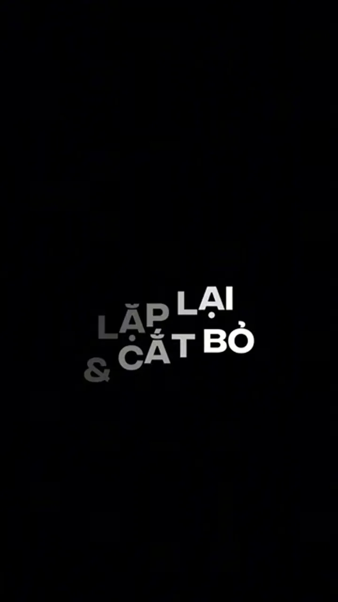
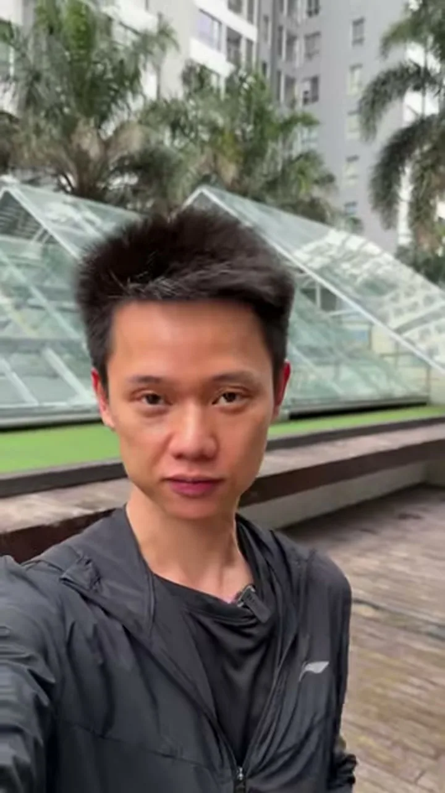
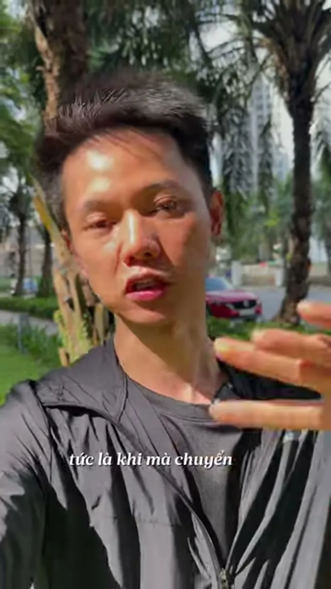
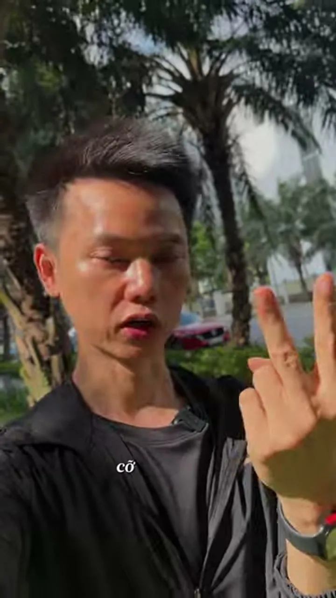
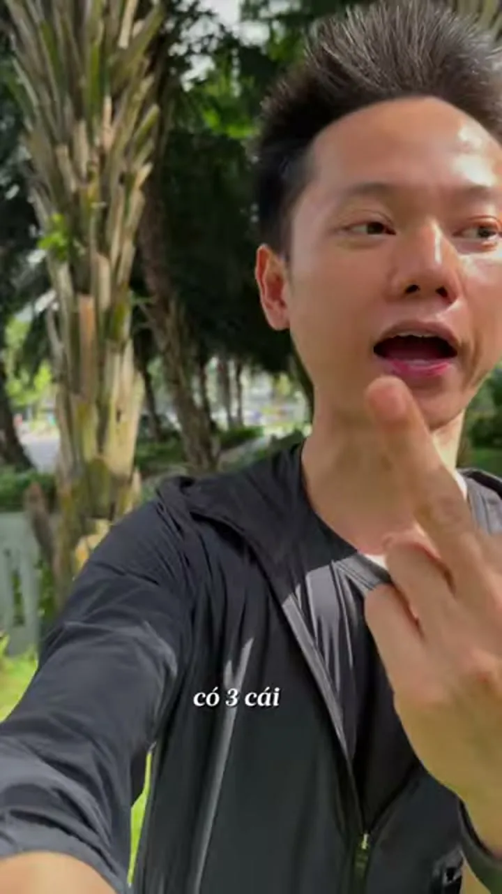
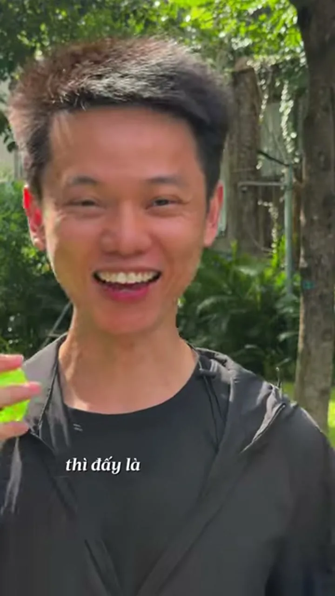

Chuyển Cảnh 2.0 — Bỏ Menu Hiệu Ứng Rẻ Tiền, Chuyển Cảnh Bằng Chính Chuyển Động Thật
Chuyển cảnh không nằm trong mục hiệu ứng 3D của CapCut. Nó nằm ở cách bạn cử động cơ thể, đôi tay và góc đặt điện thoại ngay lúc bấm quay. Giáo trình này đúc kết trọn vẹn hệ thống 3 Loại chuyển cảnh thực chiến (Cut on Action 70/30, Level 1 Giống Selfie, Level 2 Có Chân máy & Quy tắc 30°), kỹ thuật Khóa trọng tâm hành động tại một vị trí, cùng 2 video bài giảng gốc của anh Nguyễn Đức Việt và 17 mẫu video thực tế để bạn biến chuyển cảnh thành phản xạ tự nhiên của cơ bắp.
📌 ĐỊNH NGHĨA GỐC CỦA ANH VIỆT: “Bản chất của chuyển cảnh là lặp lại cùng một hành động ở hai vị trí (hoặc góc nhìn) khác nhau, rồi cắt bỏ đoạn thừa ở giữa đi.”
PHẦN 01 / 06Đặt Vấn Đề, Nền Tảng Lý Thuyết, Logic & Tâm Lý Học Thị Giác
1.1. Mở đầu phá băng: Video dán hiệu ứng CapCut rẻ tiền vs. Video chuyển cảnh bằng chuyển động thật
Đầu buổi học, giảng viên đặt một câu hỏi cho cả lớp: “Ai đã từng bấm vào mục Hiệu ứng Chuyển cảnh trên CapCut để chèn xoáy 3D, lật trang sách hay chớp sáng? Giơ tay.” Sau đó chiếu 2 video dài 12 giây có cùng một lời thoại:
❌ VIDEO A: DÁN HIỆU ỨNG CAPCUT RẺ TIỀN
Đứng yên nói xong câu → Dán hiệu ứng lật trang, xoáy 3D, chớp trắng
• Cách quay: Người nói đứng im một chỗ, nói hết câu rồi dừng lại chờ tắt máy. Sang cảnh sau mới bắt đầu cử động.
• Cách ghép: Vì hai cảnh đứng im nối vào nhau bị giật hình, người dựng lấy hiệu ứng lật trang, vỡ kính, chớp sáng trong menu CapCut đắp đè lên vết cắt.
• Cảm giác của khách xem: Lộ rõ vẻ nghiệp dư ngay giây thứ 2. Hiệu ứng màu mè cướp mất sự chú ý khỏi lời nói, làm giảm uy tín của người làm nghề.
✅ VIDEO B: CHUYỂN CẢNH BẰNG CHUYỂN ĐỘNG THẬT
Gật đầu, lia máy hoặc cắt ngay lúc bàn tay đang rót nước, mở sổ
• Cách quay: Cuối cảnh 1 người quay hơi lấy đà rồi gật đầu dứt khoát (hoặc tay đang đặt ly nước xuống bàn). Đầu cảnh 2 tiếp nối đúng đà gật đầu đó ở một không gian mới.
• Cách ghép: Cắt thẳng (Hard Cut) ngay giữa lúc chuyển động đang nhanh nhất — không dùng bất kỳ hiệu ứng nào của phần mềm.
• Cảm giác của khách xem: Hai không gian nối liền thành một động tác mượt mà. Người xem tập trung 100% vào nội dung và nể phục sự chỉn chu của người làm nghề.
“Chuyển cảnh không nằm trong menu của CapCut. Nó nằm ở cách bạn cử động lúc bấm quay. Chuyển cảnh phục vụ nội dung — chuyển cảnh nổi hơn nội dung là chuyển cảnh hỏng.” — Nguyễn Đức Việt
1.2. Bảng 3 nghĩ nhầm của người mới khi làm chuyển cảnh
Nghĩ nhầm của người mới
Sự thật cơ học & thị giác
Hệ quả khi làm sai
1. Chuyển cảnh là hiệu ứng 3D, lật trang, chớp nháy trên app
Chuyển cảnh là chuyển động vật lý có thật của cơ thể, bàn tay hoặc máy quay được tính sẵn từ lúc bấm máy.
Video lộ ngay mùi nghiệp dư; khách hàng thấy màu mè và lướt qua.
2. Cứ quay cảnh nào đẹp rồi đem nối vào nhau là mượt
Hai cảnh phải khác nhau rõ ràng (về cỡ cảnh, góc máy, bối cảnh), nhưng điểm rơi và tọa độ của hành động phải khớp nhau.
Mắt người xem bị khựng tại vết cắt, con ngươi phải chạy đi tìm chủ thể nên mỏi mắt.
3. Phải có máy ảnh đắt tiền, gimbal và kỹ xảo phức tạp
80% độ mượt quyết định bởi động tác dứt khoát lúc quay bằng điện thoại và nhát cắt đúng điểm 70/30.
Tốn hàng giờ ngồi mò hiệu ứng trên điện thoại mà vết cắt vẫn giật cục.
1.3. Định nghĩa gốc rễ của anh Nguyễn Đức Việt: Công thức 3 nhịp tạo "Tốc Biến"
Trong bài giảng thực chiến, anh Việt đúc kết toàn bộ kỹ thuật chuyển cảnh về đúng một câu gốc rễ dễ nhớ nhất:
📌 ĐỊNH NGHĨA GỐC (CÂU ĐINH DÙNG XUYÊN SUỐT KHÓA HỌC)
“Bản chất của chuyển cảnh là lặp lại cùng một hành động ở hai vị trí (hoặc góc nhìn) khác nhau, rồi cắt bỏ đoạn thừa ở giữa đi — thế là thành chuyển cảnh (tốc biến)!”
Nhịp 1: Hành động giống nhau
Lặp lại cùng một động tác vật lý: Ví dụ bạn làm động tác gật đầu ở quán cà phê, rồi sang phòng tập gym bạn cũng làm lại đúng động tác gật đầu đó (hoặc tay vươn ra cầm cốc ở góc rộng, rồi lặp lại tay vươn ra cầm cốc ở góc cận).
Nhịp 2: Vị trí / Góc nhìn khác nhau
Bối cảnh hoặc góc đặt máy thay đổi rõ rệt: Từ trong nhà bước ra ngoài đường, từ quán cà phê sang bàn làm việc, hoặc từ cỡ cảnh Trung ngang tầm mắt đổi sang cỡ cảnh Cận góc cao lệch trên 30 độ.
Nhịp 3: Cắt bỏ đoạn thừa ở giữa = Tốc biến
Chỉ giữ khúc đầu ở Cảnh 1 và khúc cuối ở Cảnh 2: Khi cắt bỏ phần dừng lại ở giữa, người xem chỉ nhìn thấy nửa đầu của động tác ở vị trí A nối liền sang nửa cuối của động tác ở vị trí B. Vết cắt biến mất, tạo cảm giác dịch chuyển tức thời (tốc biến).
1.4. Tâm lý học & Cơ chế mắt người xem: Vì sao chuyển động giấu được vết cắt và thả lỏng đầu óc?
Năm cơ chế tâm lý và thị giác dưới đây giải thích vì sao bạn bắt buộc phải cắt trong lúc chuyển động và luyện chuyển cảnh thành phản xạ cơ bắp:
Cơ chế thị giác & tâm lý
Điều gì diễn ra trong mắt và não người xem?
Ứng dụng trực tiếp khi quay & dựng
1. Mắt đuổi theo vật đang chạy (Mù tạm thời với vết cắt)
Mắt người xem có phản xạ tự nhiên là bám theo vật thể đang di chuyển (bàn tay đang vươn, đầu đang gật, chiếc xe đang lướt qua). Ngay lúc mắt đang bận đuổi theo chuyển động, vết cắt trôi qua mà người xem không kịp nhận ra.
Luôn cắt ngay giữa lúc tay, đầu hoặc vật thể đang chạy nhanh nhất. Tuyệt đối không chờ động tác dừng hẳn mới cắt.
2. Đà chuyển động báo trước tâm lý
Khi thấy một bàn tay đang vươn ra hoặc cái đầu hơi nhích nhẹ lấy đà rồi quất sang bên, người xem tự động đoán trước sẽ có cảnh mới mở ra. Cảnh sau xuất hiện đúng theo hướng đà đó thì não bộ thấy hoàn toàn hợp lý.
Khi gật đầu hoặc quay đầu chuyển cảnh, bắt buộc phải hơi nhích ngược chiều lấy đà một chút rồi quất dứt khoát. Quay lờ đờ sẽ làm người xem bị khựng.
3. Cảnh mới làm não giật mình nhẹ, ở lại xem tiếp
Theo lời giảng của anh Việt: “Cảnh sau thay đổi càng rõ rệt so với cảnh trước thì não người xem càng giật mình nhẹ vì bối cảnh mới xuất hiện → họ ở lại xem thêm một ít, rồi lại một ít, và kết quả là xem hết video.”
Mỗi lần cắt cảnh là một lần làm mới khung hình: đổi bối cảnh sau lưng, hoặc đổi đồng thời Cỡ cảnh + Góc máy + Hướng máy lệch trên 30°.
4. Quy ước nhịp 2–3 giây của lớp học
Trên video ngắn dọc 9:16, nếu giữ nguyên một khung hình tĩnh quá 3 giây mà không có biến đổi góc nhìn hoặc chuyển động mới, sự chú ý của người xem sẽ tụt nhanh và ngón tay cái tự động vuốt lên.
Quy ước thực hành tại lớp: Cứ mỗi 2 đến 3 giây (tương đương 1 câu nói ngắn hoặc 1 thao tác tay) là thực hiện một điểm cắt chuyển cảnh.
5. Trí nhớ cơ bắp (Muscle Memory) giúp tập trung 100% vào NỘI DUNG
Anh Việt nhấn mạnh: “Mỗi lần quay là nắng khác, người khác, không khí khác. Khi luyện đủ nhiều thành trí nhớ cơ bắp — giống người hay chụp selfie giơ máy lên là biết góc mặt đẹp — tay chân sẽ tự cảm nhận bối cảnh này nên chuyển cảnh kiểu gì.”
Khi tay chân tự động làm chuyển cảnh theo phản xạ, đầu óc bạn hoàn toàn nhẹ nhõm để tập trung 100% vào việc NÓI NỘI DUNG và truyền tải cảm xúc. Nội dung hay + chuyển cảnh mượt = người xem ở lại lâu và thấy thoải mái.
PHẦN 02 / 06Loại 1 — Cắt Ở Lúc Hành Động Đang Diễn Ra (Cut On Action — Nền Tảng Cơ Bản Nhất)
2.1. Nguyên lý vàng: Quy tắc cắt 70/30 trên thanh tiến trình chuyển động
Cut on Action (Cắt ngay khi hành động đang diễn ra) là nền tảng cơ bản nhất của mọi kỹ thuật dựng video. Cả Level 1 (Giống Selfie) và Level 2 (Có Chân máy) đều đứng trên nguyên lý này. Thay vì đợi bàn tay đặt chiếc cốc nằm im trên bàn rồi mới bấm cắt, bạn chia toàn bộ động tác từ lúc bắt đầu đến lúc kết thúc thành 100% quãng đường và áp dụng Quy tắc 70/30:
📐 SƠ ĐỒ TRỰC QUAN: QUY TẮC CẮT 70 / 30 TRÊN THANH TIẾN TRÌNH HÀNH ĐỘNG (100%)VẾT CẮT TÀNG HÌNH
CẢNH A: LẤY 70% ĐẦU ĐỘNG TÁC (0% → 70%)
Tay bắt đầu vươn ra cầm cốc / kéo cửa / hạ ly xuống bàn. Cắt ra ngay tại mốc 70% — đúng lúc bàn tay đang lao đi với tốc độ nhanh nhất (chưa kịp dừng hoặc vừa tiếp xúc nhẹ mặt bàn).
✂️ ĐOẠN THỪA CẮT BỎ
Khúc dừng lại ở cuối Cảnh A + Khúc lấy đà chậm ở đầu Cảnh B (Khán giả không thấy đoạn này).
CẢNH B: NỐI VÀO 30% CUỐI ĐỘNG TÁC (70% → 100%)
Ở góc máy mới (Cận cảnh / lệch > 30°), nối vào đúng 30% quãng đường cuối cùng hướng, cùng tốc độ để hoàn tất hành động (đáy cốc đặt hẳn xuống bàn / cánh cửa mở rộng).
💡 4 Quy tắc sống còn khi cắt 70/30: (1) Không bao giờ đợi tay dừng hẳn mới cắt; (2) Hai nửa động tác ở Cảnh A và Cảnh B phải cùng hướng và cùng tốc độ (tay đi từ trái sang phải ở A thì ở B cũng phải từ trái sang phải); (3) Lúc quay ở Cảnh B hãy làm trọn vẹn lại cả động tác từ đầu để lúc dựng dễ chọn điểm khớp 30% cuối; (4) Bàn tay, vật thể đang di chuyển và bước chân là 3 thứ dễ cắt khớp nhất cho người mới.
2.2. Giải phẫu 5 Video mẫu thực tế Loại 1 (Cut on Action) từ Kho Ý Tưởng
Bấm trực tiếp vào từng thẻ dưới đây để xem video gốc và quan sát 6 khung hình trích xuất tại điểm cắt:
MẪU 01 • CUT ON ACTION ĐỜI THƯỜNGMượn chuyển động ngước nhìn & vật thể lướt qua tiền cảnh nối mạch phố cổ Kyoto(@acupper • Mã: DdoYrPsy9g-)
Phân tích điểm cắt & chuyển động: Mở đầu bằng cảnh soi gương làm tóc, sau đó nối sang cảnh đi bộ trong ngõ cổ: đúng lúc nhân vật xoay đầu ngước nhìn lên góc trái (70% đà xoay), khung hình cắt ngay sang cận cảnh chiếc đèn lồng đung đưa. Ở Shot 05, chiếc xe ô tô trắng lướt ngang che kín ống kính làm màn quẹt tự nhiên mở ra hiệu sách cổ.
Cách áp dụng cho học viên: Không cần bất kỳ hiệu ứng phần mềm nào: hãy cắt ngay khi đầu vừa xoay hoặc khi có người/xe cộ đi ngang qua trước ống kính.
Xem chi tiết từng khung hình trích xuất (6 shots)
• Shot 01 (1.62s | Cận cảnh qua gương (Mirror POV)): Cô gái cầm iPhone quay cận qua gương, thợ làm tóc đang tết tóc cài hoa chuẩn bị mặc kimono dạo phố Kyoto. ➔ Kỹ thuật cắt: Hard Cut mở màn
• Shot 02 (0.80s | Toàn cảnh đối xứng (Wide Symmetric Establishing Shot)): Chính diện toàn cảnh ngôi chùa gỗ cổ truyền thống với lối đi lát đá trung tâm và hai hàng cây tùng xanh mướt. ➔ Kỹ thuật cắt: Jump Cut xác lập không gian
• Shot 03 (1.07s | Góc trung theo dõi sau lưng (Medium Tracking Follow)): Cô gái mặc kimono hoa anh đào bước đi dọc con hẻm cổ lát đá, ngoảnh mặt ngước nhìn lên chiếc đèn lồng treo trước cửa nhà gỗ. ➔ Kỹ thuật cắt: Eyeline Match Cut
• Shot 04 (0.72s | Cận cảnh đặc tả (Close-Up B-roll)): Cận cảnh chiếc đèn lồng giấy trắng vẽ hoa anh đào đỏ treo trước cửa nhà Nhật, hộp thư kim loại phản chiếu bóng người đi qua. ➔ Kỹ thuật cắt: Cut on Eyeline
• Shot 05 (0.83s | Góc trung toàn cảnh (Medium Wide Shot)): Cô gái mặc kimono đứng quay lưng xem tranh bưu thiếp trước hiên nhà gỗ, bất ngờ một chiếc ô tô trắng lao qua tiền cảnh từ trái sang phải che khuất khung hình. ➔ Kỹ thuật cắt: Foreground Wipe Cut (Chuyển cảnh Level 1)
• Shot 06 (0.65s | Góc trung ngang vai (Over-the-shoulder / Medium Shot)): Trước hiệu sách cổ Sanmitsudo, cô gái lướt qua góc trái tiền cảnh trong khi một người đàn người mặc áo đỏ đang đi bộ từ trái sang phải tiền cảnh. ➔ Kỹ thuật cắt: Cut on Action đối xứng
MẪU 02 • POV TỦ LẠNH & CUT ON ACTIONChuỗi Cut on Action mở cánh cửa tủ lạnh, vươn tay lấy nước và rót ra cốc góc POV(@yula_andrieieva • Mã: DeaMdF4RjPv)
Phân tích điểm cắt & chuyển động: Đặt điện thoại bên trong ngăn mát tủ lạnh nhìn ra ngoài. Cắt sát 1 khung hình tối trước khi cánh cửa bật mở (Shot 01 ➔ 02), sau đó bàn tay nhân vật vươn thẳng về phía ống kính (70% quãng đường vươn tay) nối mượt sang cảnh kéo lon nước lùi ra xa và bật nắp rót bọt gas.
Cách áp dụng cho học viên: Đặt máy bên trong tủ lạnh, tủ đồ hoặc kệ hàng, mở cửa và đưa bàn tay về phía ống kính rồi cắt sang cảnh cầm sản phẩm trên bàn.
Xem chi tiết từng khung hình trích xuất (6 shots)
• Shot 01 (0.04s | Fridge POV Shot (Góc nhìn từ bên trong tủ lạnh)): Máy quay được đặt cố định sẵn bên trong ngăn mát tủ lạnh đang đóng kín, khung hình tối đen hoàn toàn trước khoảnh khắc cánh cửa bật mở. ➔ Kỹ thuật cắt: Fade-in tự nhiên từ bóng tối sang ánh sáng khi mở cửa tủ
• Shot 02 (0.38s | Fridge POV Reveal (Góc nhìn từ trong tủ lạnh nhìn ra)): Cánh cửa tủ lạnh Pelgrim bật mở sang trái, để lộ khay nhựa trong suốt có chai sữa/đồ uống xanh trắng nắp nâu ở tiền cảnh trước khi nhân vật xuất hiện. ➔ Kỹ thuật cắt: Chuyển động mở cửa liên tục nối sang Shot 03
• Shot 03 (2.04s | Medium Close-Up POV (Trung cận góc nhìn chủ quan từ đồ vật)): Nữ creator mặc áo thun trắng cúi người nhìn vào trong tủ lạnh với ánh sáng cửa sổ chiếu ngược từ phía sau, kèm dòng chữ 'DAY 5 of learning cinematography' rồi vươn bàn tay phải về phía ống kính. ➔ Kỹ thuật cắt: Hand-Block Wipe (Đưa bàn tay che kín ống kính để chuyển cảnh)
• Shot 04 (0.33s | Extreme Macro Lens-Block (Siêu cận che ống kính chuyển cảnh)): Lòng bàn tay của nhân vật áp sát che kín ống kính máy quay, ánh sáng cửa sổ xuyên qua kẽ tay tạo quầng sáng hồng cam ấm áp trong khi dòng chữ 'DAY 5 of learning cinematography' vẫn neo cố định. ➔ Kỹ thuật cắt: Invisible Wipe Cut (Cắt ẩn tại điểm che kín ống kính)
• Shot 05 (0.42s | Extreme Macro Transition (Siêu cận chuyển tiếp mở ống kính)): Khung hình chuyển tiếp từ mảng tối của bàn tay/lon nước áp sát ống kính với vệt sáng cam ấm ở góc dưới bên trái, chuẩn bị kéo lon Pepsi rời khỏi ống kính và tắt dòng chữ tiêu đề. ➔ Kỹ thuật cắt: Pull-Back Reveal (Kéo đạo cụ lùi xa ống kính để mở cảnh mới)
• Shot 06 (0.33s | Macro Pull-Back Shot (Cận cảnh kéo lùi đạo cụ khỏi ống kính)): Lon Pepsi vỏ đen được rút lùi khỏi sát mặt ống kính, tạo thành mảng bokeh mờ ảo mang sắc đỏ - trắng - xanh đặc trưng trước khi lùi về khoảng cách lấy nét. ➔ Kỹ thuật cắt: Chuyển động kéo lùi liên tục nối sang Shot 07
MẪU 03 • CHUỖI HÀNH ĐỘNG BÊN CỬA SỔMở cửa sổ đón gió, nhấc cốc gốm trên kệ, rót cà phê nóng và đặt cốc lên đôn gỗ(@iman.lizi • Mã: Ddv7PoCo2AA)
Phân tích điểm cắt & chuyển động: Chuỗi 10 cảnh ngắn nhịp ~1 giây/cảnh: Tay đẩy cánh cửa sổ trượt lên (cắt khi cửa đang trượt) ➔ Tay vươn vào kệ gỗ nhấc cốc gốm (cắt khi cốc vừa rời mặt kệ) ➔ Dòng cà phê nâu hổ phách đang chảy vào cốc ➔ Tay hạ cốc xuống mặt đôn gỗ (cắt ngay khi đáy cốc vừa tiếp xúc mặt gỗ).
Cách áp dụng cho học viên: Khi quay cảnh pha chế hoặc chuẩn bị bàn làm việc, luôn bấm cắt lúc bàn tay và đồ vật còn đang di chuyển, không chờ tay đặt đồ xong rồi mới cắt.
Xem chi tiết từng khung hình trích xuất (6 shots)
• Shot 01 (0.92s | Medium Shot (Góc trung xác lập không gian cửa sổ)): Bàn tay mặc áo len kem đẩy nhẹ khung cửa sổ kính trắng trượt lên trên, mở ra mảng lá cây xanh mướt bên ngoài; phía trước kệ sách trắng đặt đèn bàn chân đá cẩm thạch (chưa bật) và hũ nến thơm trên cuốn tạp chí, kèm dòng chữ 'weekend plans:' giữa khung hình. ➔ Kỹ thuật cắt: Hard Cut nối sang hành động chọn cốc
• Shot 02 (0.79s | Close-Up (Cận cảnh bàn tay lấy cốc gốm)): Cận cảnh kệ gỗ sồi chia ngăn vuông vức trưng bày bộ sưu tập cốc gốm thủ công; bàn tay nhân vật vươn vào nhấc chiếc cốc gốm men loang cam đất ở ô chính giữa. ➔ Kỹ thuật cắt: Action Cut nối trực tiếp sang cảnh rót cà phê vào đúng chiếc cốc vừa lấy
• Shot 03 (1.58s | Medium Close-Up (Trung cận hành động rót cà phê)): Nhân vật mặc áo sơ mi vải đũi mỏng màu kem cầm bình thủy tinh (carafe) rót dòng cà phê nâu hổ phách vào chiếc cốc gốm đặt trên cuốn tạp chí Ark Journal ngay cạnh cửa sổ mở, khói trắng mỏng bốc lên. ➔ Kỹ thuật cắt: Hard Cut chuyển sang góc đặt cốc xuống bàn
• Shot 04 (1.38s | Medium Close-Up (Trung cận góc kệ đèn và đôn gỗ)): Chiếc đèn bàn chân đá cẩm thạch trên kệ đã được bật sáng vàng ấm; bên trái khung hình, bàn tay hạ chiếc cốc cà phê đặt xuống mặt chiếc đôn gỗ tròn tiện chân cổ điển cạnh rèm voan trắng và các cuốn sách nghệ thuật ('LIVE BEAUTIFUL', 'THE NEW ERA'). ➔ Kỹ thuật cắt: Match-on-Action cắt vào cận cảnh chiếc cốc vừa đặt xuống đôn gỗ
• Shot 05 (1.17s | Eye-Level Close-Up (Cận cảnh ngang tầm mặt bàn)): Góc máy hạ thấp ngang mặt đôn gỗ tròn chân tiện cổ điển, đặc tả chiếc cốc gốm men loang nằm tĩnh lặng bên cạnh mép ghế bành bọc vải lông cừu (bouclé) xù mềm màu kem. ➔ Kỹ thuật cắt: Angle Change Cut (>45 độ) vọt lên góc nhìn từ trên cao xuống ở Shot 6
• Shot 06 (1.04s | High-Angle Medium Close-Up (Trung cận góc cao 45 độ)): Góc máy nâng cao nhìn chéo 45 độ từ trên xuống: Chiếc cốc cà phê đen sóng sánh đặt trên mặt đôn gỗ ở tiền cảnh, phía sau là kệ sách trắng với chiếc đèn bàn đá cẩm thạch bật sáng vàng ấm. ➔ Kỹ thuật cắt: Hard Cut lùi rộng ra toàn cảnh góc đọc sách ở Shot 7
MẪU 04 • CHUỖI THAO TÁC TAY NHỊP 1–2 GIÂYChuỗi hành động tay liên hoàn: Kéo ga giường, vỗ gối, kéo rèm, xay cà phê & mở sổ làm việc(@joshdiazfilms • Mã: Dctj7NfNimM)
Phân tích điểm cắt & chuyển động: Mỗi cảnh chỉ dài từ 0.5s đến 0.9s và 100% đều cắt giữa lúc hai bàn tay đang hoạt động mạnh nhất: tấm ga giường đang bay xuống nệm, bàn tay đang vỗ phồng chiếc gối, tay đang kéo rèm cửa sổ mở tung ánh nắng, và ngòi bút đang chạy trên giấy.
Cách áp dụng cho học viên: Bài mẫu chuẩn cho Bài tập 1 tại lớp: ghép 6 thao tác tay quen thuộc buổi sáng theo đúng nhịp 70% cuối cảnh trước nối vào 30% đầu cảnh sau.
Xem chi tiết từng khung hình trích xuất (6 shots)
• Shot 01 (2.88s | Medium Shot): Josh Diaz đứng trực diện trước ống kính trong phòng khách sáng sủa, vừa nhấp ngụm nước vừa nhìn thẳng vào camera. Dòng chữ '3 THINGS THAT MAKE MY LIFE FEEL PUT TOGETHER' xuất hiện nổi bật chính giữa khung hình. ➔ Kỹ thuật cắt:
• Shot 02 (0.87s | Medium Close-Up): Góc quay ngang giường ngủ: Hai bàn tay kéo căng tấm chăn ga màu xám trắng, làm phẳng các nếp nhăn chỉ trong một động tác duy nhất. ➔ Kỹ thuật cắt:
• Shot 03 (0.67s | Close-Up): Bàn tay vỗ nhẹ hai bên chiếc gối nằm màu trắng, căn chỉnh gối đặt ngay ngắn trên đầu giường. ➔ Kỹ thuật cắt:
• Shot 04 (0.50s | Medium Shot): Bàn tay kéo nhẹ dải rèm cửa sổ màu be, để ánh nắng ban mai tràn ngập căn phòng. ➔ Kỹ thuật cắt:
• Shot 05 (0.50s | High-Angle Medium): Cảnh quay từ trên cao (High Angle): Đẩy chiếc ghế ăn vào gầm bàn và căn chỉnh lọ hoa trang trí vào đúng tâm điểm. ➔ Kỹ thuật cắt:
• Shot 06 (0.67s | Macro Close-Up): Cận cảnh máy xay cà phê kim loại hoạt động, bột cà phê nâu mịn rơi đều xuống khay chứa kèm âm thanh giòn giã. ➔ Kỹ thuật cắt:
Phân tích điểm cắt & chuyển động: Video vừa giảng vừa làm mẫu trực tiếp: Đang bước chân trên đồi cát sa mạc (70% bước chân), cắt thẳng vào bước chân tiếp đất giữa phòng khách tối (30% cuối bước chân) mà vẫn giữ nguyên tốc độ vung tay và câu nói không ngắt nhịp.
Cách áp dụng cho học viên: Kết hợp cắt theo chuyển động bước chân (Match Action) với việc để âm thanh câu nói của cảnh sau vang lên sớm hơn hình ảnh 0.5 giây (J-Cut).
Xem chi tiết từng khung hình trích xuất (6 shots)
• Shot 01 (1.29s | Toàn cảnh (Wide Shot)): Mridupawan Sharma bước đi trên đồi cát sa mạc Thar, tay cầm áo khoác, nói thẳng vào ống kính: "Stop using transitions..." ➔ Kỹ thuật cắt: Match Cut động tác bước chân
• Shot 02 (1.21s | Toàn cao (High Angle Wide Shot)): Nhân vật tiếp tục bước tới và vung tay trong phòng khách tối, nói tiếp cụm: "...that are boring" ➔ Kỹ thuật cắt: Match Cut On Action
• Shot 03 (2.09s | Góc ngước thấp (Low Angle Shot)): Nhân vật nhảy bước từ bậc cửa xe safari Jeep xuống bãi cát sa mạc, tiếp tục câu thoại: "instead use..." ➔ Kỹ thuật cắt: Match Cut đà di chuyển hạ chân
• Shot 04 (2.46s | Trung cảnh toàn (Medium Full Shot)): Đổi sang áo sơ mi đỏ, đứng trên sân thượng pháo đài cổ Jaisalmer, chỉ tay vào ống kính nói dứt khoát: "...improve!" ➔ Kỹ thuật cắt: Cut trực tiếp theo nhịp thoại
• Shot 05 (1.50s | Toàn cảnh trung tâm (Center Symmetrical Wide Shot)): Nhân vật dang rộng hai tay giữa đường nhựa sa mạc, tiêu đề chữ đỏ rực hiện lên: "the MASK CUT" ➔ Kỹ thuật cắt: Foreground Mask Cut
• Shot 06 (0.42s | Cận cảnh chuyển động lướt (Wipe Insert Shot)): Một chiếc xe ô tô SUV màu trắng phóng vút từ phải qua trái, thân xe che kín 100% diện tích cảm biến máy quay trong 0.4s ➔ Kỹ thuật cắt: Wipe Cut tự nhiên
PHẦN 03 / 06Loại 2 — Chuyển Cảnh Level 1: Giống Selfie / Dùng Cơ Thể & Điện Thoại (Bài Giảng CaDZiACYrV8)
3.1. Video bài giảng gốc của anh Nguyễn Đức Việt (CaDZiACYrV8) & Bảng nhảy mốc giây trọng tâm
Ở Cấp độ 1, bạn dùng chính cơ thể của mình (cái đầu, cánh tay) và chiếc điện thoại cầm trên tay để tạo chuyển cảnh — không cần chân máy, không cần người đi theo quay hộ. Hãy bấm xem trực tiếp bài giảng của anh Việt và dùng các nút mốc giây bên dưới để nhảy tới từng kỹ thuật:
BÀI GIẢNG GỐC #01Nguyễn Đức Việt — Chuyển Cảnh Thực Chiến Cấp Độ 1: Giống Selfie (5:55)
⏱️ BẤM NHẢY ĐẾN ĐÚNG MỐC GIÂY TRỌNG TÂM TRONG BÀI GIẢNG:
Mốc 0:15Bản chất

Lặp hành động 2 vị trí
Mốc 0:31Gật đầu
Cầm máy giống Selfie
Mốc 0:35Lấy đà

Lấy đà & quất dứt khoát
Mốc 1:00Quay đầu
Quay đầu sang ngang
Mốc 1:12Vừa đi vừa nói
Vừa đi vừa quay giữ nhịp
Mốc 1:58Lia máy
Lia ngang & lắc cổ tay
3.2. Phân tích sâu Level 1: Lợi thế "Giống Selfie" ở nơi đông người & 2 Nhóm thao tác
Vì sao anh Việt gọi Cấp độ 1 là Chuyển cảnh giống Selfie? Khi bạn đi vào quán cà phê, phòng tập gym, tiệm trà sữa, hội chợ, rạp chiếu phim hay đi bộ ngoài đường phố đông đúc, nếu mang theo chân máy cồng kềnh ra dựng thì rất bất tiện và dễ ngại ánh nhìn của người xung quanh. Nhưng khi bạn chỉ giơ chiếc điện thoại lên ngang mặt như đang chụp ảnh selfie, không ai để ý hay thấy phiền — bạn có thể bấm máy ở bất kỳ đâu trong 5 giây.
Nhóm kỹ thuật
Thao tác cụ thể
Cách làm chuẩn (Đúng cơ học mắt)
Lỗi người mới hay vấp
Nhóm 2A — Dùng Đầu Cơ thể tự nhiên
1. Gật đầu (Head Nod)
Cuối Cảnh 1: Hơi ngước nhẹ cằm lên để lấy đà ngược chiều, rồi gật đầu dứt khoát xuống. Đầu Cảnh 2: Tiếp nối đà đầu đang ngẩng lên ở bối cảnh mới.
Gật đầu chậm, nửa vời, không có nhịp lấy đà khiến người xem không kịp chuẩn bị tâm lý.
Nhóm 2A — Dùng Đầu Cơ thể tự nhiên
2. Quay / Lắc đầu sang ngang (Head Turn)
Cuối Cảnh 1: Đang nhìn thẳng ống kính, hơi nhích nhẹ đầu sang phải lấy đà rồi quất dứt khoát sang trái. Đầu Cảnh 2: Mặt từ bên phải quay trở lại nhìn thẳng ống kính.
Quay cổ lờ đờ hoặc Cảnh 1 quay sang trái nhưng Cảnh 2 lại quay ngược hướng.
Nhóm 2B — Dùng Điện thoại / Tay Thao tác máy
3. Lia máy ngang (Whip Pan)
Cuối Cảnh 1: Lia cổ tay cầm điện thoại thật nhanh sang một bên (tạo vệt mờ chuyển động). Đầu Cảnh 2: Lia máy từ hướng tương ứng vào đúng khuôn mặt bạn ở nơi mới.
Lia máy quá chậm hoặc ngập ngừng giữa chừng nên lộ rõ cảnh thừa ở đoạn giữa.
Nhóm 2B — Dùng Điện thoại / Tay Thao tác máy
4. Lia máy dưới lên / trên xuống (Whip Tilt)
Cuối Cảnh 1: Hất nhanh điện thoại từ dưới lên trời (hoặc chúc xuống đất). Đầu Cảnh 2: Kéo máy cùng hướng từ dưới đất lên thẳng gương mặt đang nói.
Cảnh 1 lia từ dưới lên nhưng Cảnh 2 lại kéo từ trên xuống làm hai nửa chuyển động đâm ngược nhau.
Nhóm 2B — Dùng Điện thoại / Tay Thao tác máy
5. Lắc xoay cổ tay camera (Camera Roll)
Lắc xoay cổ tay cầm điện thoại nghiêng nhanh sang trái ở cuối Cảnh 1, rồi lắc trả lại về vị trí cân bằng ở đầu Cảnh 2.
Xoay lệch trục ngang quá lâu khiến người xem bị chóng mặt.
Nhóm 2B — Dùng Điện thoại / Tay Thao tác máy
6. Đưa tay / đạo cụ che kín ống kính (Lens Block)
Cuối Cảnh 1: Đưa lòng bàn tay, vạt áo hoặc cuốn sổ che kín 100% ống kính. Đầu Cảnh 2: Rút tay từ sát ống kính ra để mở ra bối cảnh mới.
Che không kín hết mắt camera (vẫn hở sáng ở góc) nên lúc ghép bị lộ đường viền cắt.
⚡ NGUYÊN LÝ CỘNG HƯỞNG TRONG BÀI GIẢNG: VỪA ĐI BỘ + VỪA NÓI + VỪA CHUYỂN CẢNH
Anh Việt chỉ rõ: “Bản chất của tâm lý học là người ta bị giữ chân bởi những thứ đang chuyển động. Nếu mình chỉ đứng im một chỗ quay thì không hấp dẫn. Nhưng nếu mình vừa đi bộ + vừa nói + vừa quay đầu hoặc lia máy chuyển cảnh thì cả người mình và cảnh vật phía sau đều chuyển động, giữ chân người xem tốt hơn hẳn.”
3.3. Giải phẫu 4 Video mẫu thực tế Loại 2 (Level 1 Giống Selfie) từ Kho Ý Tưởng
MẪU LEVEL 1 #01 • BÀN TAY CHE ỐNG KÍNH (LENS BLOCK)Cầm máy giống selfie: Đưa bàn tay che kín ống kính và rút tay mở ra trang phục mới(@etaemin • Mã: DdoooYmq-cd)
Phân tích điểm cắt & chuyển động: Nhân vật tự cầm điện thoại bằng một tay, tay kia cử động theo nhịp nhạc rồi đưa lòng bàn tay áp sát che kín 100% ống kính ở cuối Cảnh 1 (tạo khung hình tối tự nhiên). Đầu Cảnh 2, bàn tay đang che kín rút nhanh ra khỏi ống kính, để lộ bộ trang phục và bối cảnh mới.
Cách áp dụng cho học viên: Khi che ống kính bằng bàn tay, phải che kín hoàn toàn ở khung hình cuối Cảnh 1 và mở ra từ trạng thái kín hoàn toàn ở khung hình đầu Cảnh 2.
Xem chi tiết từng khung hình trích xuất (2 shots)
• Shot 01 (5.40s | Medium Close-up (Cận vừa trực diện) + Z-axis Motion): Tae Min xuất hiện trong phòng tắm với diện mạo mộc mạc (áo thun trắng Henley, tóc ướt chưa chải). Anh đưa tay múa nhịp nhàng theo đúng ca từ bài hát ('Upside down... down... in'), kết thúc bằng động tác 2 bàn tay vươn sát che kín camera. ➔ Kỹ thuật cắt: Hand Lens Block (Che ống kính bằng bàn tay)
• Shot 02 (3.82s | Medium Shot (Trung cảnh khoe nửa thân & góc mặt)): Hai bàn tay mở ra khỏi ống kính (Wipe Out) trên chữ 'OUT' màu cam nổi bật. Tae Min biến hình ngoạn mục: tóc vuốt nếp chỉn chu, áo thun rêu thời thượng, phông nền studio đen sang trọng, tự tin vuốt tóc và khoe góc nghiêng nam tính. ➔ Kỹ thuật cắt: Hand Pull-Out (Rút tay mở ống kính) ➔ Match Cut Loop
MẪU LEVEL 1 #02 • SELFIE SÂN BAY SANG PHỐ ĐÊMÁp sát mặt và che ống kính tại sảnh sân bay, mở tay lùi bước giữa ngã tư phố đêm Fukuoka(@la6vish • Mã: DakwX2NBYs1)
Phân tích điểm cắt & chuyển động: Cảnh 1 quay góc selfie cận mặt ở sảnh chờ sân bay, cuối cảnh bàn tay đưa lên che kín mặt kính camera. Cảnh 2 bắt đầu bằng việc rút bàn tay khỏi ống kính kèm động tác bước lùi nhanh ra xa giữa ngã tư phố đêm rực rỡ ánh đèn.
Cách áp dụng cho học viên: Rất dễ áp dụng khi đi công tác, đi sự kiện hoặc dẫn khách đi xem thực tế: quay 1 câu ở cửa vào, che ống kính rồi mở ra ở khu vực chính.
Xem chi tiết từng khung hình trích xuất (3 shots)
• Shot 01 (3.93s | High Angle Close-Up (Cận mặt góc cao)): Cô gái khoác áo hoodie, dán sticker ngôi sao ở má, ngồi tại sảnh chờ sân bay cúi sát mặt nhìn trực diện vào ống kính tạo kết nối cá nhân mạnh mẽ trước khi che kín camera. ➔ Kỹ thuật cắt: Lens Cover Cut (Cắt tại thời điểm tay che kín cảm biến)
• Shot 02 (1.03s | Extreme Close-Up to Medium (Cận mặt bung ra)): Bàn tay che camera từ shot 1 mở ra ở cự ly cận mặt, phông nền đã chuyển hẳn sang con phố đêm rực rỡ bảng hiệu neon và người qua lại tại Fukuoka, Nhật Bản. ➔ Kỹ thuật cắt: Hand Cover Reveal (Mở tay hé lộ bối cảnh mới)
• Shot 03 (2.77s | Medium Shot (Góc trung lùi dần)): Nhân vật rút tay về, lùi bước ra xa giữa ngã tư đường phố Fukuoka, khoe trọn vóc dáng trong trang phục áo yếm vàng gợi cảm giữa dòng người và xe cộ tấp nập. ➔ Kỹ thuật cắt: Direct Cut kết thúc video
MẪU LEVEL 1 #03 • COMBO CẦM TAY ĐI QUÁN CÀ PHÊCombo cầm tay dạo quán: Bước qua khung cửa vòm, lia theo bước chân và ngó đầu tự nhiên(@lisha_ho • Mã: Ddqo7-eTI2A)
Phân tích điểm cắt & chuyển động: Toàn bộ video được quay ở nơi đông người (quán cà phê Ralph Lauren) bằng thao tác cầm tay gọn nhẹ: lia máy qua khung cửa vòm, cắt theo nhịp bước chân đang sải trên sàn, và động tác ngó đầu nghiêng qua túi xách (Peek-a-boo) rất tự nhiên.
Cách áp dụng cho học viên: Ở quán cà phê hoặc tiệm đông khách, chỉ cần giơ điện thoại ngang ngực và kết hợp bước chân + nghiêng đầu là có ngay chuỗi cảnh mượt mà không gây chú ý.
Xem chi tiết từng khung hình trích xuất (6 shots)
• Shot 01 (0.80s | Establishing Wide Shot (Góc toàn xác lập bối cảnh qua cửa vòm)): Lisha đứng giữa khung cửa vòm gỗ cao cấp của Ralph Lauren KLCC, vẫy tay chào người xem trong bộ áo khoác da lộn tua rua vàng bò và chân váy rêu dài. ➔ Kỹ thuật cắt: Direct Cut / Rhythm Cut theo nhịp nhạc
• Shot 02 (0.97s | Close-Up / Macro Detail Shot (Cận cảnh phụ kiện & dải ảnh)): Cận cảnh tay Lisha cầm dải ảnh photobooth 3 khung hình kỷ niệm cùng chiếc túi xách Ralph Lauren da đen/nâu viền chỉ sáng sang trọng. ➔ Kỹ thuật cắt: Match Cut / Fast Jump Cut
• Shot 03 (0.97s | Medium Low-Angle Shot (Góc trung thấp tôn vinh nét mặt tự nhiên)): Lisha ngồi ngả người trên ghế tựa gỗ, giơ cao chú gấu móc khóa Polo Bear bằng da màu cam vừa đập hộp với nụ cười thích thú. ➔ Kỹ thuật cắt: Speed Ramp / Quick Cut
• Shot 04 (0.87s | Ground-level Feet Shot (Cận cảnh bước chân di chuyển)): Cận cảnh đôi bốt cao gót đen sải bước trên tấm thảm cói màu cát vàng ấm cúng cạnh chân bàn gỗ tiện tròn cổ điển. ➔ Kỹ thuật cắt: Whip Pan / Motion Blur Transition
• Shot 05 (0.90s | Foreground Object Reveal (Hé lộ nhân vật sau sản phẩm)): Chiếc túi da Polo màu nâu đặt tiền cảnh trên bàn gỗ, Lisha từ phía sau bất ngờ nghiêng người ló đầu ra với ánh mắt mở to đầy ngạc nhiên hóm hỉnh. ➔ Kỹ thuật cắt: Cut on Action / Reveal Cut
• Shot 06 (0.90s | Medium Full Shot (Góc trung toàn ướm đồ thời trang)): Lisha đứng trước sào đồ Ralph Lauren, cầm móc áo set đầm navy thắt nơ trước ngực ướm lên người, kết hợp áo len vàng quàng vai. ➔ Kỹ thuật cắt: Jump Cut theo nhịp phách
MẪU LEVEL 1 #04 • 5 KIỂU MỞ MÀN BẰNG CƠ THỂ & ÁO KHOÁC5 kiểu chuyển động cơ thể và vạt áo khoác tự nhiên giúp giữ mắt người xem ngay giây đầu(@yok.lagun • Mã: DcA80Aez6Aw)
Phân tích điểm cắt & chuyển động: Thay vì đứng im nhìn ống kính rồi mới nói, nhân vật dùng chính cơ thể và trang phục làm chuyển động cắt cảnh: hất vạt áo khoác quét ngang ống kính, vừa thả người ngồi xuống ghế lười vừa nói, kết hợp đổi góc máy trên 30 độ sau mỗi 1–2 giây.
Cách áp dụng cho học viên: Có thể dùng vạt áo khoác, cuốn sổ tay, ly cà phê hoặc túi xách quẹt ngang ống kính thay cho bàn tay để tạo chuyển cảnh Level 1.
Xem chi tiết từng khung hình trích xuất (6 shots)
• Shot 01 (0.40s | Establishing / Visual Hook): Triển khai khung hình Establishing / Visual Hook trong 0.4s phục vụ mạch Kỹ Thuật Chuyển Cảnh & Nhịp Điệu. ➔ Kỹ thuật cắt:
• Shot 02 (0.56s | Close-Up Detail (Cận cảnh)): Triển khai khung hình Close-Up Detail (Cận cảnh) trong 0.6s phục vụ mạch Kỹ Thuật Chuyển Cảnh & Nhịp Điệu. ➔ Kỹ thuật cắt:
• Shot 03 (0.40s | Medium Action (Góc trung)): Triển khai khung hình Medium Action (Góc trung) trong 0.4s phục vụ mạch Kỹ Thuật Chuyển Cảnh & Nhịp Điệu. ➔ Kỹ thuật cắt:
• Shot 04 (0.98s | Close-Up Detail (Cận cảnh)): Triển khai khung hình Close-Up Detail (Cận cảnh) trong 1.0s phục vụ mạch Kỹ Thuật Chuyển Cảnh & Nhịp Điệu. ➔ Kỹ thuật cắt:
• Shot 05 (3.81s | Medium Action (Góc trung)): Triển khai khung hình Medium Action (Góc trung) trong 3.8s phục vụ mạch Kỹ Thuật Chuyển Cảnh & Nhịp Điệu. ➔ Kỹ thuật cắt:
• Shot 06 (2.27s | Close-Up Detail (Cận cảnh)): Triển khai khung hình Close-Up Detail (Cận cảnh) trong 2.3s phục vụ mạch Kỹ Thuật Chuyển Cảnh & Nhịp Điệu. ➔ Kỹ thuật cắt:
PHẦN 04 / 06Loại 3 — Chuyển Cảnh Level 2: Có Chân Máy (Mỗi Động Tác Đều Là Chuyển Cảnh & Bộ 3 Quy Tắc 30° — Bài Giảng eg6T8-SekjQ)
4.1. Video bài giảng gốc của anh Nguyễn Đức Việt (eg6T8-SekjQ) & Bảng nhảy mốc giây trọng tâm
Khi bạn ở trong văn phòng, cửa hàng, phòng làm việc hoặc công viên có thời gian thoải mái hơn và đặt điện thoại lên chân máy (hoặc kê cố định trên mặt bàn), hai bàn tay của bạn hoàn toàn tự do. Lúc này, mọi động tác của cơ thể và đạo cụ (bước vào khung, kéo ghế, đặt ly nước, mở sổ, tung bóng, thoa son) đều trở thành một điểm cắt chuyển cảnh tự nhiên.
BÀI GIẢNG GỐC #02Nguyễn Đức Việt — Chuyển Cảnh Cấp Độ 2: Có Chân Máy & Bộ 3 Quy Tắc 30 Độ (3:44)
⏱️ BẤM NHẢY ĐẾN ĐÚNG MỐC GIÂY TRỌNG TÂM TRONG BÀI GIẢNG:
Mốc 0:25Mục đích
Giật mình nhẹ → Ở lại xem
Mốc 0:45Quy tắc 1
Đổi Cỡ Cảnh (Trung/Toàn/Cận)
Mốc 0:58Quy tắc 2

Đổi Góc Máy (Ngang/Thấp/Cao)
Mốc 1:18Quy tắc 3

Đổi Hướng Máy > 30 Độ
Mốc 2:08Tung bóng 1

Tung bóng: Cỡ Trung → Rộng
Mốc 2:52Tung bóng 2

Bắt bóng: Cận & Lệch > 30°
4.2. Bộ 3 Quy tắc bắt buộc khi đổi cảnh có Chân máy & Sơ đồ mặt đồng hồ 30 Độ
Khi dùng chân máy, nếu bạn chỉ cắt ghép trên cùng một góc đặt máy cố định thì hình ảnh sẽ bị giật (Jump-cut lỗi). Để mỗi cú cắt làm người xem thấy mới mẻ và ở lại xem hết video, anh Việt bắt buộc học viên phải đổi đồng thời 3 thông số của máy quay:
Quy tắc 1: Đổi Cỡ Cảnh
Trung ↔ Toàn (Rộng) ↔ Cận ↔ Đặc tả: Cảnh trước đang ở cỡ Trung (Medium Shot — thấy từ thắt lưng trở lên) thì cảnh sau bắt buộc phải lùi ra cỡ Toàn/Rộng (Wide Shot — thấy cả dáng người và không gian) hoặc tiến vào cỡ Cận (Close-up — chỉ thấy bàn tay cầm ly, cuốn sổ, thỏi son).
Quy tắc 2: Đổi Góc Máy
Ngang tầm mắt ↔ Thấp hất lên ↔ Cao nhìn xuống ↔ Góc chéo: Không giữ máy ở cùng một độ cao. Cảnh 1 đặt máy ngang tầm mắt (Eye-level) → Cảnh 2 hạ thấp máy hất nhẹ lên (Low-angle) → Cảnh 3 nâng cao máy chúc xuống 45° hoặc 90° (High-angle / Top-down).
Quy tắc 3: Đổi Hướng Máy > 30°
Dời chân máy theo cung tròn lệch tối thiểu 30 độ (nên từ 35°–45° trở lên): Cảnh sau không được giữ nguyên trục hướng máy cũ hoặc chỉ nhích nhẹ vài phân. Nếu góc lệch nhỏ hơn 30°, não người xem tưởng vẫn là góc máy cũ bị cắt lỗi nên cảm thấy hình bị nhảy giật cục. Khi lệch trên 30° kết hợp đổi cỡ cảnh, não bộ lập tức công nhận đây là một góc nhìn mới hoàn toàn!
🕒 SƠ ĐỒ MẶT ĐỒNG HỒ TRỰC QUAN: QUY TẮC DỜI CHÂN MÁY LỆCH TRÊN 30 ĐỘ (> 30°)1 GIỜ TRÊN ĐỒNG HỒ = 30 ĐỘ
Bạn ngồi ở tâm đồng hồ · Chân máy dời theo vành tròn
Mẹo đặt chân máy theo mặt đồng hồ tại lớp: Hãy tưởng tượng bạn đang ngồi ở tâm chiếc đồng hồ kim, còn chân máy đặt trên vành tròn xung quanh bạn (mỗi múi giờ trên mặt đồng hồ tương ứng đúng 30°):
Cảnh 1 đặt ở hướng 12 giờ (Trục 0° gốc): Quay cỡ Trung, ngang tầm mắt.
❌ Vùng lỗi (12h05 đến 12h45 — Lệch dưới 30°): Tuyệt đối không đặt chân máy ở vùng này vì hai cảnh trông gần giống nhau, cắt vào sẽ bị giật hình như lỗi kỹ thuật.
✅ Vùng chuẩn (Từ 1 giờ rưỡi đến 3 giờ — Lệch 45° đến 90°): Dời chân máy sang hướng 1h30 hoặc 2h (lệch hơn 30° một chút), đồng thời tiến sát vào quay cỡ Cận hoặc hạ thấp góc máy.
4.3. Giải phẫu 4 Video mẫu bài tập có Chân máy từ Kho Ý Tưởng
MẪU CHÂN MÁY #01 • CÔNG THỨC 1 HÀNH ĐỘNG QUAY 3 GÓCĐặt chân máy cố định, bật ống kính 2x: Một hành động đọc sách quay từ 3 góc lệch > 30°(@jigummmmm • Mã: DbtuUwvzi5c)
Phân tích điểm cắt & chuyển động: Học viên đặt điện thoại lên chân máy trong góc phòng nhỏ, bật ống kính 2x để xóa gọn đồ đạc bừa bộn xung quanh. Cùng một việc ngồi đọc sách và lật trang, tác giả dời chân máy qua 3 vị trí: Góc 1 Toàn cảnh bước vào ➔ Góc 2 Cao chúc 45° cận bàn tay lật sách ➔ Góc 3 Qua vai sau lưng.
Cách áp dụng cho học viên: Khi quay một mình với chân máy, hãy làm lại đúng động tác lật trang sách hoặc cầm bút 2–3 lần ở các vị trí chân máy lệch nhau trên 30 độ để ghép nối.
Xem chi tiết từng khung hình trích xuất (6 shots)
• Shot 01 (1.53s | Over-the-Shoulder / Foreground Framing (Góc qua vai điện thoại tiền cảnh)): Góc máy quay qua vai chiếc iPhone đang bật nút Record đỏ mờ ở tiền cảnh trái, lấy nét vào bàn tay nhân vật mặc đồ ngủ đen đặt lên cuốn sách mở trên bàn kèm dòng chữ viết tay: 'Bố cục Reels cảm xúc, dễ hơn bạn nghĩ nhiều'. ➔ Kỹ thuật cắt: Hard Cut vào cận cảnh màn hình điều khiển
• Shot 02 (1.02s | Close-Up Screen POV (Cận cảnh giao diện màn hình điện thoại)): Cận cảnh màn hình iPhone gắn trên chân máy đang để chế độ xóa phông (시네마틱), tiêu cự 2x, 4K 30fps, khóa nét vàng (자동 초점 고정) vào cuốn sách cạnh nhành lá; ngón trỏ nhân vật vươn vào bấm nút quay đỏ. ➔ Kỹ thuật cắt: Match Cut giữ nguyên khung điện thoại
• Shot 03 (1.23s | Medium Close-Up Frame-in-Frame (Trung cận khung hình lồng khung hình)): Màn hình iPhone báo đang quay (00:00:03), giữ nguyên khung 2x lấy nét vào cuốn sách trên bàn và nhành lá tiền cảnh phải; nhân vật mặc đồ đen bước từ bên trái vào bàn. ➔ Kỹ thuật cắt: Punch-in Cut phóng nhẹ vào màn hình
• Shot 04 (1.18s | Tight Close-Up Screen View (Cận cảnh sát màn hình điện thoại)): Máy quay ngoài đẩy sát vào màn hình iPhone đang quay cảnh nhân vật ngồi mở trang sách, ô vuông vàng khóa nét ngay tại các ngón tay, bên phải là cành lá xanh làm tiền cảnh mờ. ➔ Kỹ thuật cắt: Match Action Cut sang cảnh Final Cut
• Shot 05 (1.57s | Medium Close-Up Final Cut (Trung cận thành phẩm góc chéo tiền cảnh)): Hiển thị nhãn 'Final Cut' kèm phụ đề 'Hôm nay mình công khai bố cục góc quay nhé': cảnh quay thực tế từ chiếc iPhone với bàn tay nhân vật đang lật trang sách, tiền cảnh là cành lá xanh xóa phông mịn màng. ➔ Kỹ thuật cắt: Hard Cut quay lại hậu trường dời máy
• Shot 06 (1.02s | Close-Up Action Shot (Cận cảnh thao tác tay dời chân máy)): Bàn tay nhân vật nắm phần cổ chân máy (tripod) nhấc và dịch chuyển chiếc iPhone sang vị trí mới kèm dòng chữ: 'Chỉ cần quay cùng một cảnh đúng 3 lần thôi'. ➔ Kỹ thuật cắt: Direct Cut sang bước bấm nút quay
MẪU CHÂN MÁY #02 • 7 GÓC MÁY QUANH BÀN LÀM VIỆC7 vị trí đặt máy cố định quanh một chiếc bàn: Mở laptop, viết sổ, gõ phím, nhìn qua vai(@kortafilms • Mã: DcdthwaTM3J)
Phân tích điểm cắt & chuyển động: Biến một chiếc bàn làm việc bình thường thành 7 khung hình khác biệt hoàn toàn nhờ tuân thủ Bộ 3 quy tắc: (1) Góc thấp hất lên mở nắp laptop, (2) Góc nhìn chủ quan POV viết sổ, (3) Cận cảnh ngón tay gõ phím, (4) Góc qua vai, (5) Góc 90° thẳng từ trên xuống, (6) Góc sát mặt bàn, (7) Góc nghiêng kéo ngăn kéo.
Cách áp dụng cho học viên: In ngay sơ đồ 7 góc đặt máy này dán cạnh bàn làm việc: mỗi lần đổi câu nói chỉ cần xoay chân máy sang góc kế tiếp trên vòng đồng hồ.
Xem chi tiết từng khung hình trích xuất (6 shots)
• Shot 01 (2.17s | Wide 24mm f/2.0): Bàn tay vươn vào từ góc trên bên trái, khẽ nhấc mép laptop HP đang đặt trên giá đỡ nghiêng. Màn hình máy tính bung mở, làm bừng sáng giao diện màn hình khóa (19:26) rực rỡ phong cảnh hoàng hôn cùng đàn chim bay, rọi ngược ánh sáng ấm lên các ngón tay. ➔ Kỹ thuật cắt:
• Shot 02 (2.50s | Standard 35mm f/1.8): Góc nhìn thứ nhất (Point of View), bàn tay trái cầm cuốn sổ tay kẻ ô lò xo với cây bút bi xanh kẹp bên cạnh. Trên trang sổ là các khung hình phác thảo storyboard phân cảnh (khung chữ nhật, hình khối phối cảnh cầu - trụ) phục vụ tiền kỳ quay dựng. ➔ Kỹ thuật cắt:
• Shot 03 (2.91s | Macro/Portrait 50mm f/1.8): Cận cảnh đặc tả (Macro Close-Up) bàn tay đang lướt gõ phím nhịp nhàng trên bàn phím laptop. Phía sau là màn hình hiển thị các dòng mã / thanh kéo thời gian Davinci Resolve và một cây đèn ấm mờ nhòe (bokeh) ở hậu cảnh. ➔ Kỹ thuật cắt:
• Shot 04 (2.96s | Cinematic 50mm f/2.0): Camera đặt sau vai người sáng tạo đang dùng bút chì phác thảo và ghi chú vào cuốn sổ tay kẻ ô trên mặt bàn gỗ. Lưng và vai áo người quay tạo thành lớp tiền cảnh đen mờ (Silhouette Foreground). ➔ Kỹ thuật cắt:
• Shot 05 (2.88s | Wide 24mm f/2.8): Camera vuông góc 90 độ từ trên trần nhìn thẳng xuống bàn làm việc, ghi trọn hai bàn tay đang gõ trên bàn phím laptop. Phía trên là thân máy Mac Mini với đèn LED xanh lam phát sáng, bên dưới là mặt bàn gỗ mộc ấm áp. ➔ Kỹ thuật cắt:
• Shot 06 (2.91s | Telephoto / Portrait 85mm f/1.8): Camera đặt sát mặt bàn nhìn về phía bàn tay đang dùng bút chì ghi chép trên cuốn sổ lò xo. Phía sau hậu cảnh là tấm Softbox dạng lưới tổ ong (Eggcrate Grid Light) màu trắng đen nổi bật bao trùm góc trên khung hình. ➔ Kỹ thuật cắt:
MẪU CHÂN MÁY #03 • 5 ĐỘNG TÁC BIẾN CHÂN MÁY TĨNH THÀNH ĐỘNG5 động tác tự nhiên trước chân máy cố định: Bước vào khung, gõ nhẹ mic, rót nước, đặt máy, nhấc máy(@alexboissetgrowth • Mã: DZXpNj_IveV)
Phân tích điểm cắt & chuyển động: Khi đã đặt điện thoại lên chân máy, hai tay bạn hoàn toàn tự do. Video làm mẫu 5 cử chỉ vật lý cực dễ để làm điểm cắt: bước từ ngoài vào ghế ngồi, ngón tay gõ nhẹ vào micro, tay cầm bình rót nước vào ly, cúi xuống đặt điện thoại lên bàn, và nhấc máy tiến lại gần.
Cách áp dụng cho học viên: Mỗi động tác tay trước chân máy (rót nước, mở sổ, kéo ghế, cầm mic) đều là một cái cớ tự nhiên để cắt sang góc máy mới lệch hơn 30 độ.
Xem chi tiết từng khung hình trích xuất (6 shots)
• Shot 01 (1.80s | Wide 24mm f/2.0): Alex Boisset trong trang phục áo thun dài tay Henley xám và quần jeans bước mở cánh cửa trượt màu trắng bước vào căn phòng, mắt hướng thẳng về camera và cất tiếng nói ngay khi cơ thể lọt vào khung hình. Trên màn hình xuất hiện dòng text phụ đề: 'Empieza el vídeo ENTRANDO EN EL PLANO'. ➔ Kỹ thuật cắt:
• Shot 02 (2.50s | Standard 35mm f/2.2): Cắt cảnh tức thì sang tư thế ngồi thư thái trên ghế bành trắng, Alex cầm cục micro thu âm không dây (DJI Mic) nhỏ gọn bằng một tay và dùng ngón trỏ tay kia gõ nhẹ vào đầu thu tạo hiệu ứng âm thanh kích thích thính giác (Micro-tap ASMR). Ánh mắt nhìn thẳng vào ống kính. Text trên màn hình: 'Empieza el vídeo PEGÁNDOLE AL MICRO'. ➔ Kỹ thuật cắt:
• Shot 03 (1.67s | Standard 35mm f/2.2): Cắt sang góc đứng, Alex cầm bình thủy tinh rót nước vào cốc nước cầm trên tay kia. Hành động rót nước diễn ra tự nhiên trong khi ánh mắt vẫn nhìn thẳng vào camera và cất lời dẫn dắt. Text trên màn hình: 'Empieza el vídeo SIRVIÉNDOTE AGUA'. ➔ Kỹ thuật cắt:
• Shot 04 (2.60s | Wide 28mm f/2.0): Cú quay cận đặt máy điện thoại xuống mặt bàn (Desk POV). Alex nhìn thẳng vào camera, tay phải đặt máy xuống bề mặt bàn rồi lùi lại một bước, tay cầm mic đưa lên ngực tiếp tục nói. Text trên màn hình: 'Empieza el vídeo DEJANDO EL MÓVIL'. ➔ Kỹ thuật cắt:
• Shot 05 (1.81s | Wide 24mm Handheld): Alex bước nhanh về phía máy, cúi người xuống và dùng tay nhấc bổng chiếc điện thoại lên, kéo khung hình từ góc thấp lên ngang tầm mắt, tạo cú chuyển động camera tiến sát (Dynamic Push-in). Text trên màn hình đổi sang: 'O empiézalo también COGIENDO EL MÓVIL'. ➔ Kỹ thuật cắt:
• Shot 06 (6.64s | Standard 35mm f/2.0): Cố định góc máy cầm tay ở cự ly trung cận (Medium Close-Up). Alex cầm micro sát môi, phong thái đĩnh đạc, ánh mắt vững chãi (Authority Gaze) nhìn thẳng vào ống kính. Bàn tay còn lại giữ máy vững vàng. Anh giải thích cặn kẽ bản chất của 5 kỹ thuật vừa làm mẫu. Text phụ đề nhịp nhàng làm nổi bật các từ khóa: Reach, Engagement, Retention. ➔ Kỹ thuật cắt:
MẪU CHÂN MÁY #04 • ĐẶT CHÂN MÁY NGOÀI TRỜI & NỐI ÁNH NHÌNTự đặt chân máy cố định khi đi dạo: Bước qua khung hình, ngước nhìn tán lá và cắt nối theo ánh mắt(@framebygeorge • Mã: DemoZWsuTjr)
Phân tích điểm cắt & chuyển động: Không có người quay hộ, tác giả đặt chân máy cố định ở lối đi, bấm quay rồi tự bước từ tiền cảnh đi vào trung tâm khung hình (Shot 01–03). Sau đó dời máy xuống góc thấp sát cỏ (đổi góc + lệch > 30°), bước đi và ngước mắt nhìn lên vòm cây, rồi cắt thẳng sang cận cảnh tia nắng xuyên qua chiếc lá.
Cách áp dụng cho học viên: Khi tự quay ngoài trời bằng chân máy, hãy dùng động tác 'bước vào khung hình' và 'ngước mắt nhìn lên một vật thể' để làm điểm cắt chuyển cảnh.
Xem chi tiết từng khung hình trích xuất (6 shots)
• Shot 01 (1.08s | Góc toàn cố định (Establishing Wide Shot)): Góc máy cố định quay con đường mòn trải đầy lá rụng trong công viên mùa thu, vòm cây xanh và lá đỏ cam đan xen phía trên, chính giữa hiện chữ 'October' màu vàng ấm. ➔ Kỹ thuật cắt: Giữ nguyên khung hình chờ nhân vật bước vào (Continuous Frame)
• Shot 02 (1.62s | Góc trung nhìn từ sau lưng bước vào khung (Frame-Entry Shot)): Trên cùng khung máy cố định, chàng trai mặc áo dài tay đen in hình sau lưng bước từ góc phải sát ống kính đi vào con đường, dòng chữ phụ 'Take a walk with me...' hiện thêm dưới chữ 'October'. ➔ Kỹ thuật cắt: Chuyển động nối tiếp trên cùng trục máy
• Shot 03 (1.46s | Góc toàn nhìn từ sau lưng (Full Back-View Shot)): Chàng trai mặc áo đen 'Inner Peace' và quần túi hộp rêu bước tới đúng tâm đường mòn có nắng chiếu, chữ trên màn hình biến mất hoàn toàn để lộ trọn vẹn vòm lá đỏ vàng phía xa. ➔ Kỹ thuật cắt: Cut thẳng sang góc máy thấp ở vị trí mới
• Shot 04 (2.04s | Góc toàn thấp có tiền cảnh che mờ (Low-Angle Foreground Framing)): Máy đặt thấp sát thảm cỏ mờ ở tiền cảnh, quay nhân vật từ phía sau lệch bên trái đang bước từ vòm cây tối ra khoảng rừng ngập nắng phía trước. ➔ Kỹ thuật cắt: Cut từ dáng người đang đi sang góc ngước nhìn bầu trời theo điểm nhìn nhân vật (POV)
• Shot 05 (1.08s | Góc trung ngước cao (Low-Angle Upward B-Roll)): Góc máy ngước lên cao quay mặt trời chiếu xuyên qua tán lá vàng xanh bên trái, phía dưới là bụi cây tối mờ ở tiền cảnh tạo quầng sáng vàng ấm áp. ➔ Kỹ thuật cắt: Cut nhanh sang cận cảnh chi tiết lá cây trong bóng tối
• Shot 06 (1.54s | Góc cận đặc tả chi tiết (Close-Up Detail Shot)): Góc cận cảnh đặc tả một nhành lá xanh bóng nằm chéo khung hình, đón trọn một vệt nắng nhỏ giữa nền rừng tối đen được xóa phông mịn màng. ➔ Kỹ thuật cắt: Cut tương phản từ nền tối sang vòm lá phong rực sáng
PHẦN 05 / 06Logic Quay & Chỉnh Sửa Sống Còn: Giữ Trọng Tâm Hành Động Ở Cùng Một Vị Trí (Eye-Trace & Re-Centering)
🎯 CHỈ ĐẠO TRỌNG TÂM CỦA ANH NGUYỄN ĐỨC VIỆT VỀ QUAY & CHỈNH SỬA
“Cần phải giữ hình ảnh ở trọng tâm, những hành động chính luôn luôn ở cùng một vị trí thì khi chuyển cảnh mới mượt. Nếu lúc quay bị lệch thì khi chỉnh sửa trên CapCut phải kéo lại sao cho nó đúng vị trí ngay tại điểm chuyển cảnh!”
5.1. Tại sao đã cắt đúng 70/30 và lệch trên 30° mà mắt người xem vẫn thấy khựng?
Rất nhiều học viên làm đúng việc cắt giữa lúc tay đang cử động (70/30) và dời chân máy lệch 45°, nhưng khi ghép hai cảnh lại vẫn thấy khựng mắt. Nguyên nhân nằm ở Tọa độ điểm nhìn (Eye-Trace):
Ở khung hình cuối của Cảnh 1, bàn tay cầm ly cà phê của bạn đang nằm ở góc dưới bên trái màn hình.
Sang khung hình đầu tiên của Cảnh 2, do bạn dời máy hoặc cầm tay bị lệch, bàn tay cầm ly lại nhảy vọt sang góc trên bên phải màn hình.
Hệ quả: Ngay khoảnh khắc chuyển cảnh, con ngươi của khán giả đang bám vào bàn tay ở bên trái buộc phải phóng vọt sang bên phải để tìm lại bàn tay. Chính cú nhảy của con ngươi làm lộ vết cắt!
Ngược lại, nếu ở cuối Cảnh 1 bàn tay nằm ở chính giữa màn hình, và đầu Cảnh 2 bàn tay cũng nằm đúng ở chính giữa màn hình, mắt người xem đứng yên tại một điểm — bối cảnh xung quanh biến đổi mà vết cắt hoàn toàn tàng hình.
5.2. Bước 1 — Lúc Quay: Bật Lưới 9 Ô (Grid) và Khóa Trọng Tâm vào Ô Trung Tâm
📱 MINH HỌA TRỰC QUAN LƯỚI 9 Ô (GRID): LỆCH TỌA ĐỘ TÂM VS. KHÓA ĐÚNG Ô TRUNG TÂMBẬT GRID TRONG CÀI ĐẶT CAMERA
❌ QUAY SAI: HÀNH ĐỘNG NHẢY CHỖ GIỮA 2 CẢNHMẮT BỊ KHỰNG
Cảnh 2: Tay ở góc phải trên
Ô giữa trống
Cảnh 1: Tay ở góc trái dưới
Cuối Cảnh 1 tay ở ô dưới trái → Đầu Cảnh 2 tay nhảy lên ô trên phải. Con ngươi khán giả phải bay chéo qua màn hình để tìm chủ thể.
✅ QUAY ĐÚNG: KHÓA CỨNG VÀO Ô TRUNG TÂMTÀNG HÌNH 100%
🎯 CẢNH 1 & 2: Khóa Tay / Vật ở Ô Giữa
Trước khi bấm máy cả Cảnh 1 và Cảnh 2, luôn đặt hành động chính (bàn tay cầm ly, đầu bút, quả bóng, khuôn mặt) nằm gọn trong Ô Trung Tâm.
5.3. Bước 2 — Lúc Chỉnh Sửa trên CapCut: 5 Bước Căn Lại Tọa Độ Tâm Khi Bị Lệch (Re-Centering)
Khi quay thực tế (nhất là khi cầm tay đi bộ hoặc dời chân máy nhanh giữa các góc), vị trí bàn tay hoặc vật thể giữa Cảnh 1 và Cảnh 2 rất dễ bị lệch nhau một chút. Lúc này, bạn dùng ngay 5 bước chỉnh tọa độ trên CapCut để kéo chúng trùng khít lên nhau:
Bước 1: Đặt kim sát vết cắt
Đưa kim thời gian (Playhead) đến ngay sát vết cắt giữa Cảnh 1 và Cảnh 2: Dùng hai ngón tay kéo giãn thanh cắt ghép trên CapCut ra rộng nhất để nhìn rõ từng khung hình (frame) cuối của Cảnh 1 và khung hình đầu của Cảnh 2.
Bước 2: Nhớ tọa độ (X, Y) ở Cảnh 1
Ghi nhớ vị trí của hành động chính ở khung hình cuối Cảnh 1: Quan sát xem bàn tay, chiếc cốc, quả bóng hoặc đôi mắt ở khung hình cuối Cảnh 1 đang nằm ở vị trí nào trên màn hình (có thể lấy ngón tay trỏ đặt nhẹ lên màn hình điện thoại tại đúng điểm đó để làm mốc).
Bước 3: Phóng nhẹ Cảnh 2 (105%–125%)
Bấm chọn clip Cảnh 2 → Dùng 2 ngón tay phóng nhẹ khung hình (Scale từ 105% đến 125%): Việc phóng nhẹ giúp tạo khoảng dư viền khung hình để bạn có thể xê dịch Cảnh 2 sang trái/phải/lên/xuống mà không bị lộ viền đen. (Lưu ý: Không phóng quá 125% để giữ độ nét của hình).
Bước 4: Kéo đè khít tọa độ (Position X/Y)
Dùng 1 ngón tay kéo khung hình Cảnh 2 (Position X/Y): Di chuyển khung hình Cảnh 2 sao cho bàn tay hoặc vật thể ở khung hình đầu Cảnh 2 nằm đè khít lên đúng vị trí tọa độ (X, Y) của khung hình cuối Cảnh 1 (nơi ngón tay bạn đang đặt làm mốc).
Bước 5: Phát lại 3 lần kiểm tra
Kéo kim thời gian lùi lại 2 giây và bấm phát (Play) 3 lần liên tiếp ở tốc độ thường: Nếu mắt bạn nhìn vào điểm hành động mà thấy êm ru không cần đảo mắt tìm kiếm, cú chuyển cảnh đã hoàn chỉnh!
5.4. Giải phẫu 4 Video mẫu khóa trọng tâm từ Kho Ý Tưởng
MẪU KHÓA TÂM #01 • KHÓA VÒNG TRÒN CHÍNH GIỮA KHUNG HÌNHKhóa cứng tâm điểm hình tròn tại ô giữa lưới 9 ô: Nối 8 vật thể từ tròng mắt xuống gian bếp(@khan.ayan9 • Mã: DeUMZwQtAHM)
Phân tích điểm cắt & chuyển động: Mở đầu bằng động tác lật trang vở làm cầu nối sang cận cảnh tròng mắt nằm ngay chính giữa khung hình. Từ đúng tọa độ tâm (X, Y) đó, tác giả nối liên tiếp 8 vật thể tròn có cùng kích thước: Tròng mắt ➔ Bóng đèn bàn ➔ Đồng hồ treo tường ➔ Quả địa cầu xoay ➔ Đáy cốc, mỗi cảnh chỉ 0.3s–0.5s mà mắt không hề bị vấp.
Cách áp dụng cho học viên: Khi quay và khi chỉnh trên CapCut, hãy phóng nhẹ và kéo các vật thể chính về đè khít lên đúng ô trung tâm của lưới 9 ô.
Xem chi tiết từng khung hình trích xuất (6 shots)
• Shot 01 (1.38s | Low-Angle Medium Close-Up (Góc máy thấp ngang mặt bàn)): Tại bàn học ánh đèn vàng ấm, cuốn vở kẻ ngang mở rộng ở tiền cảnh, bàn tay phải cầm bút bi chuẩn bị viết và bấm vào mép giấy, hậu cảnh mờ bokeh thấy chân đèn bàn màu cam đỏ và tai nghe chụp tai. ➔ Kỹ thuật cắt: Action Cut (Cắt theo động tác tay lật trang giấy)
• Shot 02 (0.33s | Extreme Close-Up Motion Blur (Đặc tả chuyển động lật trang)): Cận cảnh trang giấy kẻ ngang đang lật vút qua ống kính trong 0.33 giây, tạo vệt mờ chuyển động (motion blur) uốn cong như hình dáng mí mắt. ➔ Kỹ thuật cắt: Whip / Shape Match Cut (Nối đường cong mép giấy sang bầu mắt)
• Shot 03 (0.71s | Macro Extreme Close-Up (Siêu cận cảnh đặc tả con mắt)): Đặc tả siêu cận (Macro) con mắt của nhân vật mở to nhìn thẳng vào ống kính, tròng mắt nâu hổ phách phản chiếu ánh đèn tạo thành khối hình tròn đồng tâm ngay chính giữa. ➔ Kỹ thuật cắt: Graphic Match Cut (Đồng dạng hình tròn từ tròng mắt sang bóng đèn bàn)
• Shot 04 (0.33s | Centered Close-Up POV (Góc cận chính tâm nhìn thẳng vào chao đèn)): Ống kính chĩa thẳng vào chao đèn bàn hình tròn màu đỏ sẫm với bóng đèn tròn phát sáng trắng rực ở tâm; xung quanh là góc tường dán poster Radiohead, Converse và tai nghe trên bàn. ➔ Kỹ thuật cắt: Graphic Match Cut (Nối hình tròn chao đèn sang mặt đồng hồ treo tường)
• Shot 05 (0.50s | Centered Straight-On Close-Up (Cận cảnh trực diện chính tâm)): Cận cảnh chính diện chiếc đồng hồ treo tường hình tròn hiệu Café de Paris chỉ hơn 1 giờ đêm, treo trên nền tường vân vàng ấm có vài nét vẽ mực bên góc phải. ➔ Kỹ thuật cắt: Graphic Match Cut (Nối hình tròn đồng hồ sang quả địa cầu)
• Shot 06 (0.54s | Medium Close-Up Centered (Cận cảnh trung tâm có tương tác tay)): Bàn tay trái từ góc trên đưa xuống giữ trục và xoay quả địa cầu để bàn màu xanh dương ở chính giữa khung hình, hậu cảnh bên phải là chiếc đèn ngủ chụp vải vàng ấm. ➔ Kỹ thuật cắt: Graphic Match Cut (Nối khối tròn quả địa cầu sang vành ống kính máy ảnh)
MẪU KHÓA TÂM #02 • KHÓA TÂM GÓC 90° TỪ TRÊN XUỐNGKhóa tọa độ tâm góc nhìn thẳng từ trên xuống: Lòng đỏ trứng ➔ Miệng cốc cà phê ➔ Hũ nến thơm(@bryanadamc • Mã: DeQYfOdpUdk)
Phân tích điểm cắt & chuyển động: Sau cú tung trứng và đập trứng vào chảo (Cut on Action), lòng đỏ trứng tròn xoe rơi vào đúng tâm khung hình (Shot 04). Ngay lập tức, Shot 05 nối bằng miệng cốc cà phê đen và Shot 06 nối bằng miệng hũ nến đang cháy — cả 3 vòng tròn nằm chồng khít lên một tọa độ duy nhất.
Cách áp dụng cho học viên: Góc quay 90 độ từ trên xuống mặt bàn rất dễ bị lệch tâm khi cầm tay; hãy dùng tính năng Scale và Position trên CapCut để kéo miệng cốc trùng khít tâm vật trước đó.
Xem chi tiết từng khung hình trích xuất (6 shots)
• Shot 01 (0.08s | Extreme Close-Up Whip Pan (Cận cảnh lia máy chuyển tiếp)): Khung hình cận cảnh trang truyện tranh/poster Spider-Man với tông màu xanh cyan và đỏ lướt nhanh kèm hiệu ứng nhòe chuyển động (Motion Blur) trong 0.08 giây đầu tiên. ➔ Kỹ thuật cắt: Whip Pan Seamless Loop (Lia máy nối vòng lặp đầu - cuối)
• Shot 02 (0.83s | Medium Shot (Góc trung cảnh nghiêng 45 độ)): Chàng trai đội mũ lưỡi trai đen, mặc áo khoác denim đứng cạnh bếp gas và tường gạch trần, tay phải tung quả trứng gà đang lơ lửng giữa không trung phía trên chảo nóng. ➔ Kỹ thuật cắt: Action Cut (Cắt theo đà rơi của quả trứng)
• Shot 03 (0.58s | Close-Up Low Angle (Cận cảnh ngang thành chảo)): Cận cảnh bàn tay nhân vật cầm quả trứng đập mạnh vào vành chiếc chảo chống dính đang đặt trên ngọn lửa bếp gas xanh đỏ. ➔ Kỹ thuật cắt: Match-on-Action Cut (Cắt nối hành động đập và tách vỏ trứng)
• Shot 04 (2.21s | Top-Down Overhead Shot (Góc chụp vuông góc 90 độ từ trên xuống)): Góc chụp thẳng từ trên xuống (Top-down) hai bàn tay tách đôi vỏ trứng, thả lòng đỏ tròn xoe rơi đúng vào chính giữa chiếc chảo tròn đang sôi lăn tăn trên kiềng bếp gas. ➔ Kỹ thuật cắt: Graphic Match Cut (Đồng dạng hình tròn tại tâm khung hình)
• Shot 05 (0.54s | Top-Down POV Shot (Góc cận nhìn từ trên xuống cốc nước)): Góc nhìn từ trên xuống hai bàn tay của nhân vật (mặc áo khoác jean, đeo đồng hồ dây kim loại) đang nâng chiếc cốc sứ màu đen chứa đầy cà phê tròn xoe ở chính giữa khung hình. ➔ Kỹ thuật cắt: Graphic Match Cut (Đồng dạng hình tròn tại tâm khung hình)
• Shot 06 (0.42s | Top-Down Macro Shot (Cận cảnh vuông góc từ trên xuống)): Góc chụp thẳng từ trên xuống một hũ nến tròn đang cháy sáng rực ở chính giữa mặt bàn gỗ sẫm màu có vân thô mộc. ➔ Kỹ thuật cắt: Graphic Match Cut (Đồng dạng hình tròn: Hũ nến -> Mặt trời)
MẪU KHÓA TÂM #03 • KHÓA VỊ TRÍ NHÂN VẬT GIỮA 10 BỐI CẢNHKhóa cứng trục lưng nhân vật ở ô trung tâm xuyên qua 10 bối cảnh bước đi tại Thượng Hải(@jxnjuvv • Mã: Dc-d8hKRMQm)
Phân tích điểm cắt & chuyển động: Nhân vật bước đi quay lưng về phía máy quay xuyên qua 10 địa điểm khác nhau (sân bay, hành lang cổ điển, sân thượng ban đêm, đại lộ, phòng khách sạn). Nhờ giữ đầu và sống lưng nhân vật nằm cố định tại trục dọc chính giữa màn hình ở mọi cảnh, 10 không gian thay đổi liên tục mà người xem thấy như một bước đi duy nhất.
Cách áp dụng cho học viên: Nếu quay cảnh bước đi qua nhiều phòng hoặc nhiều địa điểm, hãy khóa vị trí đầu và vai người đi vào đúng ô giữa của lưới 9 ô.
Xem chi tiết từng khung hình trích xuất (6 shots)
• Shot 01 (4.57s | Medium Facing Tracking (Góc trung đi thẳng về máy)): Cô gái đeo kính râm, kéo vali qua sảnh sân bay rộng thênh thang, trên đầu hiện bong bóng thoại: 'So...how was Shanghai?'. ➔ Kỹ thuật cắt: Direct Cut sang chuỗi Follow-cam
• Shot 02 (0.43s | Medium Follow Shot (Quay bước đi từ sau lưng)): Chuyển sang góc quay sau lưng, cô gái mặc đầm xám cổ cao bới tóc, bước đi tự tin dọc hành lang cửa lụa phong cách Á Đông. ➔ Kỹ thuật cắt: Match Cut theo nhịp chân bước
• Shot 03 (0.70s | Wide Follow Shot (Góc toàn bám lưng lấy đại cảnh)): Vẫn dáng bước đi từ sau lưng với đầm dạ hội hở lưng lấp lánh, sải bước ra ban công nhìn trọn vẹn tháp Oriental Pearl rực rỡ. ➔ Kỹ thuật cắt: Footstep Beat Cut
• Shot 04 (0.57s | Medium Tracking Follow (Bám theo sau lưng)): Nữ chính mặc áo len đỏ nổi bật, bước đi giữa lòng đường hai bên là những tòa nhà đá phong cách Châu Âu cổ kính. ➔ Kỹ thuật cắt: Center-aligned Match Cut
• Shot 05 (0.57s | Symmetrical Follow Shot (Bám đuổi đối xứng tâm)): Bước đi dọc hành lang khách sạn sang trọng với váy trắng hở lưng thắt nơ, ánh đèn hắt tường tạo chiều sâu hút mắt. ➔ Kỹ thuật cắt: Rhythm Beat Cut
• Shot 06 (0.47s | One-point Perspective Shot (Phối cảnh một điểm tụ)): Chủ thể vắt áo len qua vai, bước đi trên đại lộ với tháp Đông Phương Minh Châu sừng sững cuối con đường. ➔ Kỹ thuật cắt: Centered Walking Cut
MẪU KHÓA TÂM #04 • KHÓA TRỤC DỌC CƠ THỂ & NHỊP BƯỚC CHÂNKhóa trục dọc cơ thể và nhịp bàn chân tiếp đất biến đổi 5 bộ trang phục giữa phố(@naohasa • Mã: DdGp4XftvIn)
Phân tích điểm cắt & chuyển động: Mỗi khi bàn chân vừa tiếp đất ở cuối Cảnh A, khung hình cắt ngay sang bàn chân tiếp đất ở đầu Cảnh B trong bộ trang phục mới. Cả trục mắt lẫn vị trí bàn chân đều được căn trùng tọa độ từng pixel giữa 5 lần bấm máy, tạo cảm giác nhân vật vừa đi vừa đổi đồ liền mạch.
Cách áp dụng cho học viên: Khi dựng cảnh bước chân đổi trang phục trên CapCut, hãy đặt kim thời gian ngay vết cắt và kéo khung hình Cảnh 2 sao cho mũi giày và tầm mắt trùng khít Cảnh 1.
Xem chi tiết từng khung hình trích xuất (5 shots)
• Shot 01 (2.50s | ): Triển khai khung hình 9:16 trong 2.5s phục vụ mạch Kỹ Thuật Chuyển Cảnh & Nhịp Điệu. ➔ Kỹ thuật cắt:
• Shot 02 (2.50s | ): Triển khai khung hình 9:16 trong 2.5s phục vụ mạch Kỹ Thuật Chuyển Cảnh & Nhịp Điệu. ➔ Kỹ thuật cắt:
• Shot 03 (2.50s | ): Triển khai khung hình 9:16 trong 2.5s phục vụ mạch Kỹ Thuật Chuyển Cảnh & Nhịp Điệu. ➔ Kỹ thuật cắt:
• Shot 04 (2.50s | ): Triển khai khung hình 9:16 trong 2.5s phục vụ mạch Kỹ Thuật Chuyển Cảnh & Nhịp Điệu. ➔ Kỹ thuật cắt:
• Shot 05 (2.50s | ): Triển khai khung hình 9:16 trong 2.5s phục vụ mạch Kỹ Thuật Chuyển Cảnh & Nhịp Điệu. ➔ Kỹ thuật cắt:
PHẦN 06 / 06Bộ 3 Bài Tập Thực Hành Bậc Thang, Bảng 10 Lỗi Thường Gặp & Phiếu Nghiệm Thu 100 Điểm
Mỗi bài tập dưới đây được thiết kế để hoàn thành ngay tại lớp hoặc tại cửa hàng của bạn trong 45 phút quay + 15 phút ghép trên CapCut, đầu ra là 1 video dọc 9:16 dài 15–25 giây:
6.1. Bài tập 1 (Cơ bản — Cut on Action tại bàn): Chuỗi 6 cú máy Pha cà phê / Uống nước – Mở sổ – Viết ghi chú
Mục tiêu: Làm chủ Quy tắc cắt 70/30 và khóa bàn tay vào Ô Trung Tâm lưới 9 ô chỉ với chiếc bàn trước mặt, 1 ly nước/cà phê và 1 cuốn sổ tay + cây bút.
Cú máy
Cỡ cảnh & Góc đặt máy
Hành động quay
Điểm cắt 70/30
Căn tâm Lưới 9 Ô
Lời thoại mẫu (Ghép đè hoặc nói trực tiếp)
Cú 1
Toàn cảnh · Ngang tầm mắt (Trục 0°)
Bước vào bàn, tay vươn ra cầm quai ly nước/cà phê.
Cắt ra ở 70% khi các ngón tay vừa bấm vào thành ly (chưa kịp nhấc).
Chiếc ly và bàn tay nằm ở Ô Trung Tâm.
“Sáng nào vào bàn làm việc mình cũng bắt đầu bằng ly này.”
Cú 2
Trung cảnh · Lệch 45° sang phải
Tay nhấc ly lên khỏi mặt bàn đưa lên uống.
Vào cảnh từ 30% cuối lúc đáy ly vừa rời mặt bàn đi lên.
Giữ chiếc ly ở đúng Ô Trung Tâm.
(Giữ tiếng động tự nhiên của ly nước, không cần lời)
Cú 3
Cận cảnh · Góc cao chúc 45°
Rót thêm nước/cà phê vào ly (hoặc khuấy thìa).
Cắt vào khi dòng nước đang chảy; cắt ra trước khi ngừng rót.
Miệng ly tròn khóa cứng tại Ô Trung Tâm.
“Làm việc gì cũng cần chuẩn bị kỹ từ những bước nhỏ nhất.”
Cú 4
Đặc tả · Góc thấp ngang mặt bàn
Hạ chiếc ly đặt "cạch" xuống mặt bàn gỗ.
Cắt ra ngay tích tắc đáy ly vừa tiếp xúc mặt bàn, tay chưa rời ly.
Đáy ly nằm đúng Ô Trung Tâm.
(Nghe rõ tiếng "cạch" của đáy ly đặt xuống bàn)
Cú 5
Trung cận · Góc qua vai (Over-the-shoulder)
Tay phải vươn sang lật mở bìa cuốn sổ tay.
Nối từ tay rời ly ở Cú 4 sang lúc bìa sổ đang lật mở lên 45°.
Bàn tay mở bìa sổ ở Ô Trung Tâm.
“Sau đó mình ghi ra ba việc quan trọng nhất cần làm cho khách.”
Cú 6
Cận cảnh · Góc cao nhìn xuống trang giấy
Bấm ngòi bút và viết nhanh dòng tiêu đề đầu tiên.
Vào cảnh đúng lúc ngòi bút đang chạy nét chữ đầu tiên trên giấy.
Đầu ngòi bút khóa tại Ô Trung Tâm.
“Xử lý dứt điểm việc khó nhất trước khi mở điện thoại.”
🎙️ KỊCH BẢN LỜI THOẠI MẪU ĐA NGÀNH CHO BÀI TẬP 1 (BẤM COPY 1 tiếp xúc)
"Sáng nào vào bàn làm việc mình cũng bắt đầu bằng ly này. / Làm nghề gì cũng cần chuẩn bị kỹ từ những bước nhỏ nhất. / Sau đó mình ghi ra ba việc quan trọng nhất cần làm cho khách hôm nay, / rồi xử lý dứt điểm việc khó nhất trước khi mở điện thoại."
• Ngành F&B / Quán cà phê: Đổi thành "Ly cà phê này mình pha mất đúng 3 phút. Hạt mới rang sáng nay, rót chậm để giữ trọn vị đậm..."
• Ngành Spa / Nha khoa: Đổi sổ tay thành khay dụng cụ / sổ theo dõi khách: "Trước khi đón vị khách đầu tiên, mình luôn kiểm tra lại toàn bộ khay dụng cụ và hồ sơ..."
• Ngành Bất động sản / Văn phòng: Đổi thành mở tập hồ sơ pháp lý: "Mỗi sáng trước khi đi xem đất cùng khách, mình luôn rà lại 3 điểm quy hoạch trong tập hồ sơ này..."
6.2. Bài tập 2 (Level 1 — Giống Selfie di chuyển): Chuỗi 5 cú máy vừa đi vừa nói kết hợp 4 kỹ thuật
Mục tiêu: Tự cầm điện thoại bằng 1 tay như đang selfie, vừa đi bộ vừa nói xuyên qua 5 không gian liên tiếp (cửa vào → sảnh → hành lang → bàn làm việc → góc trưng bày) bằng đủ 4 kỹ thuật trong video CaDZiACYrV8.
Chuyển cảnh
Kỹ thuật Level 1 sử dụng
Thao tác cơ thể & điện thoại
Bối cảnh thay đổi
Căn tâm Lưới 9 Ô
Lời thoại mẫu khi vừa đi vừa nói
Cú 1 → Cú 2
1. Gật đầu có lấy đà (Head Nod)
Đang đi bộ nói hết câu 1: hơi ngước cằm lấy đà rồi gật đầu dứt khoát xuống ở cuối Cú 1. Đầu Cú 2: Đầu đang từ dưới ngẩng lên đi tiếp.
Từ ngoài cửa bước vào sảnh chính.
Khuôn mặt khóa ở Ô Trung Tâm (hoặc đường 1/3 trên).
“Chào bạn, hôm nay mình dẫn bạn đi một vòng xem nơi làm việc của mình nhé.”
Cú 2 → Cú 3
2. Quay đầu sang ngang (Head Turn)
Đang đi ở sảnh: hơi nhích mặt sang phải lấy đà rồi quất đầu dứt khoát sang trái ở cuối Cú 2. Đầu Cú 3: Mặt từ bên phải quay về nhìn thẳng ống kính.
Từ sảnh chính sang hành lang / khu làm việc.
Đôi mắt giữ cùng một độ cao ngang trên Lưới 9 Ô.
“Khu vực bên này là nơi tụi mình trực tiếp kiểm tra sản phẩm mỗi sáng.”
Cú 3 → Cú 4
3. Lia điện thoại ngang (Whip Pan)
Cuối Cú 3: Cánh tay cầm điện thoại lia nhanh một mạch sang phải tạo vệt mờ. Đầu Cú 4: Máy lia từ trái sang phải dừng đúng gương mặt bạn.
Từ hành lang vào bàn tư vấn / phòng dịch vụ.
Dừng máy đúng lúc khuôn mặt về lại Ô Trung Tâm.
“Đi thêm vài bước nữa là tới góc mà khách nào ghé thăm cũng thích nhất.”
Cú 4 → Cú 5
4. Bàn tay che kín ống kính (Lens Block)
Cuối Cú 4: Đưa bàn tay (hoặc đạo cụ) áp sát che kín 100% ống kính. Đầu Cú 5: Rút bàn tay khỏi ống kính, mở ra góc trưng bày sản phẩm và nói câu kết.
Từ bàn tư vấn mở ra kệ thành phẩm / không gian mới.
Khi rút tay ra, khuôn mặt và sản phẩm nằm ngay Ô Trung Tâm.
“Và đây là thành phẩm thực tế mình vừa chuẩn bị xong. Mời bạn ghé trải nghiệm trực tiếp nhé!”
🎙️ KỊCH BẢN LỜI THOẠI MẪU ĐA NGÀNH CHO BÀI TẬP 2 (BẤM COPY 1 tiếp xúc)
"Chào bạn, hôm nay mình dẫn bạn đi một vòng xem nơi làm việc của mình nhé. [Gật đầu] / Khu vực bên này là nơi tụi mình trực tiếp kiểm tra chất lượng mỗi sáng. [Quay đầu] / Đi thêm vài bước nữa là tới góc mà khách nào ghé thăm cũng thích nhất. [Lia máy] / Và đây là thành phẩm thực tế mình vừa chuẩn bị xong, mời bạn ghé trải nghiệm trực tiếp nhé!"
• Quán cà phê / Nhà hàng: Đi từ vỉa hè → quầy pha chế → góc bàn nắng đẹp → bưng ly nước trên tay.
• Phòng Gym / Yoga / Spa: Đi từ quầy lễ tân → khu máy tập / phòng trị liệu → hướng dẫn 1 tư thế chuẩn.
• Bất động sản / Nội thất: Đứng từ cổng/cửa căn hộ → bước vào phòng khách → lia sang bếp → mở ra ban công thoáng đãng.
6.3. Bài tập 3 (Level 2 — Có Chân máy & Quy tắc 30°): Hai Phương Án Thực Hành (Hệ Chill Trong Nhà & Hệ Năng Động Ngoài Trời)
Mục tiêu: Đặt điện thoại cố định trên chân máy (hoặc kệ đỡ), hai tay tự do hoàn toàn. Thực hiện chuỗi 5–6 cú máy liên hoàn, trong đó mỗi lần cắt bắt buộc đổi đủ 3 yếu tố: Đổi Cỡ Cảnh + Đổi Góc Máy + Dời hướng máy lệch trên 30°. Học viên chọn 1 trong 2 phương án dưới đây:
Phương án A — Hệ Chill / Trong nhà (Bàn làm việc, Bàn trang điểm, Quán cà phê): Kéo ghế – Đặt ly – Mở sổ / Thoa son – Mở máy
Cú máy
Cỡ cảnh
Góc máy
Hướng máy (Mặt đồng hồ)
Động tác làm cớ chuyển cảnh
Điểm cắt 70/30 & Căn tâm Lưới 9 Ô
Cú 1
Toàn cảnh (Wide)
Ngang tầm mắt
12 giờ (Trục 0° gốc)
Bước vào bàn, hai tay kéo chiếc ghế ra và ngồi xuống.
Cắt ở 70% khi người đang hạ xuống mặt ghế; ghế khóa ở Ô Trung Tâm.
Cú 2
Trung cảnh (Medium)
Góc thấp hất nhẹ lên
1 giờ rưỡi (Lệch 45° phải)
Vừa ngồi xuống hoàn tất 30% cuối, tay cầm ly cà phê / thỏi son đặt lên bàn.
Cắt khi ly/thỏi son đang hạ xuống cách mặt bàn 2cm; vật ở Ô Trung Tâm.
Vào cảnh khi nắp laptop đang mở từ 70% lên 100%; gương mặt ở Ô Trung Tâm.
Phương án B — Hệ Năng động ngoài trời (Theo đúng mẫu của anh Việt trong video eg6T8-SekjQ): Tung & Bắt quả bóng đổi cỡ cảnh, góc máy, lệch trên 30°
Cú máy
Cỡ cảnh
Góc máy
Hướng máy (Lệch > 30°)
Hành động Tung & Bắt bóng
Điểm cắt 70/30 & Căn tâm Lưới 9 Ô
Cú 1
Trung cảnh (Medium)
Ngang tầm mắt
Hướng 12 giờ (0° gốc)
Đứng cầm quả bóng nhỏ, nói câu mở đầu rồi tung quả bóng bay lên.
Cắt ra ở 70% khi quả bóng vừa rời tay bay lên ngang trán tại Ô Trung Tâm.
Cú 2
Toàn cảnh rộng (Wide)
Góc thấp từ dưới hất lên
Hướng 2 giờ (Lệch 60° phải)
Quả bóng đang bay ở rất khéo nhất rồi rơi xuống tay bắt lấy và tung tiếp lần 2.
Vào cảnh khi bóng đang trên không; cắt ra khi tay vừa tung bóng lần 2 ở Ô Trung Tâm.
Cú 3
Cận cảnh (Close-up)
Góc cao chúc xuống
Hướng 10 giờ (Lệch 60° trái)
Cận bàn tay vươn ra chụp gọn quả bóng đang rơi xuống.
Vào cảnh ở 30% cuối đúng tích tắc quả bóng lao vào lòng bàn tay tại Ô Trung Tâm.
Cú 4
Trung cận (MCU)
Góc chéo ngang vai
Hướng 1 giờ rưỡi (Lệch 45°)
Chuyển bóng từ tay phải sang tay trái (hoặc tung nhẹ qua lại) và nói ý chính.
Cắt ngay khi quả bóng đang bay ngang giữa hai bàn tay tại Ô Trung Tâm.
Cú 5
Toàn cảnh (Wide)
Ngang tầm mắt
Hướng 12 giờ (Quay về chính diện)
Bắt gọn quả bóng trước ngực, mỉm cười nhìn thẳng ống kính nói câu kết.
Nối đúng nhịp tay nắm gọn quả bóng tại Ô Trung Tâm, tiếng "bụp" khớp hình.
🎙️ KỊCH BẢN LỜI THOẠI MẪU CHO BÀI TẬP 3 (BẤM COPY 1 tiếp xúc)
"Nhiều bạn hỏi mình làm sao quay video một mình với chân máy mà vẫn sinh động. / Rất đơn giản: mỗi động tác tay của bạn đều là một điểm chuyển cảnh. / Chỉ cần nhớ đổi cỡ cảnh, đổi góc máy và dời chân máy lệch trên 30 độ, / người xem sẽ theo dõi câu chuyện của bạn từ đầu đến giây cuối cùng."
💡 Mẹo đánh dấu chân máy tại lớp: Dán 3–4 miếng băng dính giấy dưới sàn nhà theo hình vòng cung (12h – 1h30 – 3h – 10h30) quanh ghế ngồi để mỗi lần dời chân máy chỉ mất đúng 5 giây là chuẩn góc > 30°!
6.4. Bảng 10 Lỗi Thường Gặp Khi Quay Dựng Chuyển Cảnh & Cách Sửa Nhanh
#
Lỗi thường gặp
Biểu hiện trên màn hình
Cách sửa dứt điểm ngay tại lớp
01
Cắt lúc tay hoặc cơ thể đã dừng hẳn
Thấy rõ khoảng đứng hình giữa hai cảnh, vết cắt lộ rõ.
Kéo điểm cắt trên CapCut lùi lại 0.3–0.5 giây về đúng mốc 70% khi động tác đang chạy nhanh nhất.
02
Gật đầu hoặc quay đầu lờ đờ, thiếu đà
Cảnh sau nhảy vào đột ngột làm người xem bị giật.
Trước khi gật/quay đầu, phải hơi nhích nhẹ ngược chiều để lấy đà rồi quất dứt khoát.
03
Lia điện thoại (Whip Pan) quá chậm
Nhìn thấy rõ các vật thể thừa ở đoạn giữa lúc lia máy.
Vẩy cổ tay lia máy nhanh một mạch để tạo vệt mờ (Motion Blur), cắt bỏ những khung hình đầu lúc máy mới bắt đầu di chuyển.
04
Hai cảnh lia máy hoặc cử động ngược hướng nhau
Cảnh 1 lia sang trái nhưng Cảnh 2 lại lia từ trái sang phải, hai lực đâm vào nhau.
Đảm bảo hai nửa động tác cùng hướng, cùng tốc độ (hoặc dùng tính năng Lật/Mirror trên CapCut nếu lỡ quay ngược bên).
05
Dời chân máy lệch dưới 30 độ (< 30°)
Hai cảnh trông gần giống nhau nên nhìn như một video bị cắt vấp (Jump-cut lỗi).
Dời chân máy theo mặt đồng hồ từ 12 giờ sang ít nhất 1 giờ rưỡi trở đi (> 30°) và đổi luôn cỡ cảnh.
06
Chỉ đổi góc máy mà quên đổi cỡ cảnh
Cả hai cảnh đều là cỡ Trung nên khung hình ít thay đổi, kém thu hút.
Luôn đi theo cặp: Đổi hướng > 30° + Đổi cỡ cảnh (Đang Trung cảnh phải nhảy sang Cận cảnh hoặc Toàn cảnh).
07
Trọng tâm hành động nhảy vị trí trên màn hình
Cuối Cảnh 1 bàn tay ở bên trái, đầu Cảnh 2 bàn tay nhảy sang bên phải làm mắt phải chạy đi tìm.
Bật Lưới 9 ô lúc quay để giữ tay ở Ô Trung Tâm; lúc dựng trên CapCut dùng Scale (105%–125%) và Position kéo đè khít tọa độ.
08
Phóng (Scale) trên CapCut quá 125%
Hình ảnh Cảnh 2 bị bệt, mờ nhòe so với Cảnh 1 do phóng quá đà.
Chỉ phóng trong ngưỡng 105%–125%; nếu lúc quay bị lệch quá xa ме́p khung hình thì bấm máy quay lại cú đó (chỉ mất 10 giây).
09
Che ống kính (Lens Block) không kín 100%
Còn khe sáng ở góc màn hình nên lúc chuyển sang Cảnh 2 bị chớp sáng lộ vết ghép.
Đưa lòng bàn tay hoặc đạo cụ áp sát kín toàn bộ cụm camera ở khung hình cuối Cảnh 1 và khung hình đầu Cảnh 2.
10
Chuyển cảnh quá đà lấn át cả lời nói
Người xem chỉ thấy quay cuồng chóng mặt mà không nhớ bạn vừa nói câu gì.
Nhớ nguyên lý của anh Việt: Chuyển cảnh phục vụ nội dung. Khi đang nói ý quan trọng, hãy đi bộ nhẹ nhàng hoặc dùng Cut on Action êm ái.
6.5. Phiếu Chấm Điểm Nghiệm Thu Tương Tác Tại Lớp (10 Tiêu Chí × 10 Điểm = 100 Điểm)
Sau khi dựng xong video bài tập trên CapCut, học viên xem lại video 2 lần (1 lần ở tốc độ thường 1.0x, 1 lần kéo chậm ở tốc độ 0.5x qua các vết cắt) và bấm tích trực tiếp vào 10 tiêu chí dưới đây để tính điểm nghiệm thu (Bài 1 & Bài 2 đạt từ 60/100 điểm; Bài 3 đạt từ 70/100 điểm):
📋 PHIẾU NGHIỆM THU CHUYỂN CẢNH 2.0 TẠI LỚP (10 TIÊU CHÍ × 10 ĐIỂM = 100 ĐIỂM)🏆 XUẤT SẮC (80–100đ): Vết cắt tàng hình, đúng nhịp 70/30, khóa tâm chuẩn xác, lời nói tự nhiên!
100 / 100 ĐIỂM
Đạt
Điểm
Tiêu chí nghiệm thu thực chiến
Cách kiểm tra nhanh ở tốc độ 1.0x & 0.5x
+10đ
1. Không dùng hiệu ứng chuyển cảnh màu mè của phần mềm
100% vết cắt là cắt thẳng (Hard Cut) dựa trên chuyển động thật của tay, cơ thể hoặc góc máy.
+10đ
2. Cắt đúng lúc hành động đang diễn ra (Quy tắc 70/30)
Cảnh trước cắt ra ở ~70% động tác (lúc đang nhanh nhất), cảnh sau nối vào ~30% cuối; không có cảnh nào chờ tay dừng hẳn mới cắt.
+10đ
3. Hai nửa chuyển động cùng hướng và cùng tốc độ
Hướng đi của bàn tay, bước chân, cái đầu hoặc cú lia máy ở cuối Cảnh A và đầu Cảnh B đồng nhất 100%.
+10đ
4. Có nhịp lấy đà và quất dứt khoát (Với Level 1 Giống Selfie)
Động tác gật đầu, quay đầu hoặc lia điện thoại có nhịp nhích nhẹ lấy đà và thực hiện dứt khoát, không lờ đờ.
+10đ
5. Đổi Cỡ Cảnh rõ rệt giữa hai cảnh liền kề (Với Chân máy)
Cảnh trước Trung thì cảnh sau đổi sang Toàn hoặc Cận/Đặc tả; không giữ nguyên một cỡ cảnh.
+10đ
6. Đổi Góc Máy & Hướng Máy lệch trên 30 độ (> 30°)
Chân máy dời từ hướng 12h sang ít nhất 1h30 trở đi, kết hợp đổi góc Ngang / Thấp / Cao; không bị lỗi Jump-cut nhẹ.
+10đ
7. Khóa Trọng Tâm hành động vào Ô Trung Tâm Lưới 9 Ô lúc quay
Bàn tay, đạo cụ chính hoặc khuôn mặt luôn nằm tại Ô Trung Tâm (hoặc đúng cùng 1 giao điểm lưới) ở cả hai cảnh.
+10đ
8. Đã căn lại tọa độ (Scale 105–125% & Position) trên CapCut
Những chỗ lúc quay hơi lệch tâm đã được phóng nhẹ và kéo trùng khít tọa độ ngay tại vết cắt; mắt người xem không phải nhảy đi tìm.
+10đ
9. Nhịp cảnh gọn 2–3 giây & Âm thanh liền mạch
Mỗi cảnh dài 1.5–3.5 giây; lời nói và tiếng động hiện trường nối qua vết cắt tự nhiên, không bị cụt chữ.
+10đ
10. Chuyển cảnh phục vụ tôn vinh Nội Dung lời nói
Người xem nghe hiểu trọn vẹn thông điệp nghề nghiệp, thấy người nói tự nhiên và muốn xem hết video.
Giáo trình Thực Chiến Chuyển Cảnh 2.0 · Biên soạn từ bài giảng gốc của Nguyễn Đức Việt (CaDZiACYrV8 & eg6T8-SekjQ) · “Lặp lại cùng một hành động ở hai vị trí khác nhau, cắt bỏ đoạn giữa, giữ trọng tâm ở cùng một chỗ.”